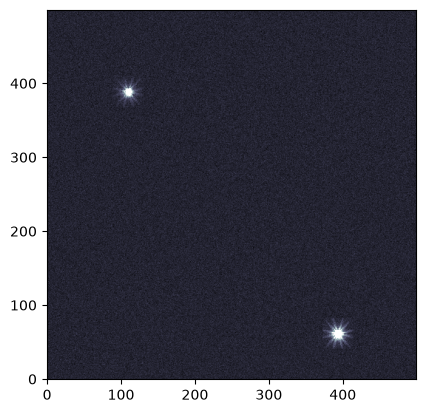
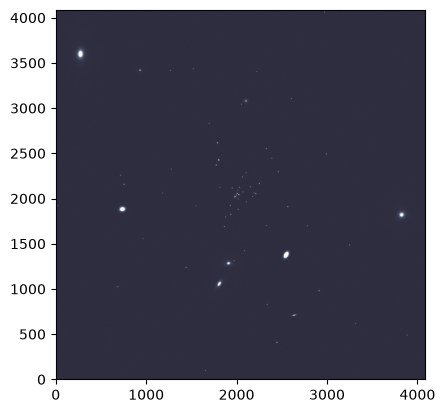
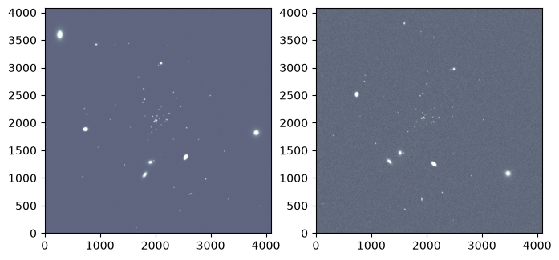
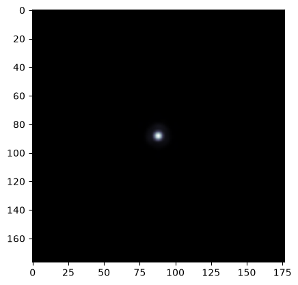
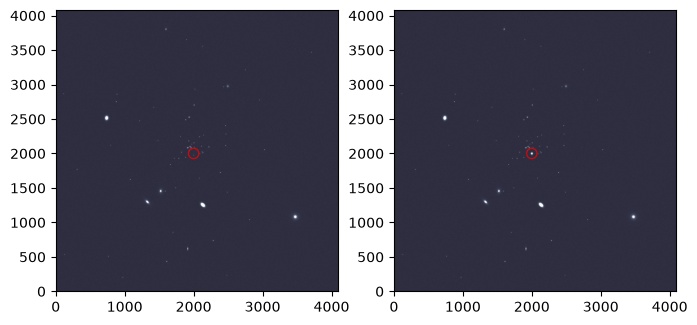

STIPS Tutorial#
Kernel Information and Read-Only Status#
To run this notebook, please select “Roman Research Nexus {VERSION}” kernel at the top right of your window. For example “Roman Research Nexus 2026.1”.
This notebook is read-only. You can run cells and make edits, but you must save changes to a different location. We recommend saving the notebook within your home directory, or to a new folder within your home (e.g. file > save notebook as > my-nbs/nb.ipynb). Note that a directory must exist before you attempt to add a notebook to it.
Introduction#
STIPS, or the Space Telescope Imaging Product Simulator, is a tool developed by STScI for simulating observations of astronomical scenes with the Roman Wide Field Instrument (WFI). Detailed documentation of the tool is available on the RDox pages.
STIPS can generate images of the entire WFI array, which consists of 18 detectors, also called Sensor Chip Assemblies (SCAs). For more information on the WFI detectors and focal plane array please see the RDox documentation. STIPS depends on the Pandeia Exposure time calculator and the STPSF point spread function (PSF) generator to create these simulations. Tutorial notebooks for both Pandeia and STPSF are also available. Users can choose to simulate between 1 and 18 SCAs in any of the WFI imaging filters, insert any number of point or extended sources, and specify a sky background estimate. STIPS will scale input fluxes to observed values, retrieve appropriate PSFs (interpolated to the positions of the sources), and add in additional noise terms.
As described in the Caveats to Using STIPS for Roman, neither pixel saturation nor non-linearity residuals are currently supported.
This notebook is a starter guide to simulating and manipulating scenes with STIPS.
Reference Data#
The cell below will check to ensure ancillary reference files for stips and pandeia packages are installed. If not, it will download the ancillary reference files and install them under your home directory (i.e., ${HOME}/refdata/).
Local Run Settings#
If you want to run the notebook in your local machine, refer to the information in local installation instructions before proceeding with the notebook. The instructions provide important information about setting up your environment, installing dependencies, and adding to your working directory scripts to help with the reference data installation.
Depending on which (if any) reference data are missing, this cell may take several minutes to execute.
On the Roman Research Nexus#
If you are working on the Nexus, then the ancillary reference data are pre-installed and this cell will execute instantly.
import os
import sys
import importlib.util
import notebook_data_dependencies as ndd
# Download reference data (if necessary)
result = ndd.install_files(packages=['stips', 'stpsf', 'pandeia_data', 'pandeia_psf', 'synphot'])
ndd.setup_env(result)
Did not find pandeia_data data in environment, setting it up...
Downloading and uncompressing file...
Found 1 data URL(s) to download and install...
Working on file 1 out of 1
Update environment variable with the following:
export pandeia_refdata='/home/runner/refdata/pandeia_data-2026.1-roman'
Did not find pandeia_psf data in environment, setting it up...
Downloading and uncompressing file...
Found 1 data URL(s) to download and install...
Working on file 1 out of 1
Update environment variable with the following:
export PSF_DIR='/home/runner/refdata/pandeia_psfs-2026.1-roman'
Did not find stpsf data in environment, setting it up...
Downloading and uncompressing file...
Found 1 data URL(s) to download and install...
Working on file 1 out of 1
Update environment variable with the following:
export STPSF_PATH='/home/runner/refdata/stpsf-data'
Did not find stips data in environment, setting it up...
Downloading and uncompressing file...
Found 1 data URL(s) to download and install...
Working on file 1 out of 1
Update environment variable with the following:
export stips_data='/home/runner/refdata/stips_data'
Did not find synphot data in environment, setting it up...
Downloading and uncompressing file...
Found 9 data URL(s) to download and install...
Working on file 1 out of 9
Working on file 2 out of 9
Working on file 3 out of 9
Working on file 4 out of 9
Working on file 5 out of 9
Working on file 6 out of 9
Working on file 7 out of 9
Working on file 8 out of 9
Working on file 9 out of 9
Update environment variable with the following:
export PYSYN_CDBS='/home/runner/refdata/grp/redcat/trds/'
Reference data paths set to:
pandeia_refdata = /home/runner/refdata/pandeia_data-2026.1-roman
PSF_DIR = /home/runner/refdata/pandeia_psfs-2026.1-roman
STPSF_PATH = /home/runner/refdata/stpsf-data
stips_data = /home/runner/refdata/stips_data
PYSYN_CDBS = /home/runner/refdata/grp/redcat/trds/
CRDS_SERVER_URL = https://roman-crds.stsci.edu (pre-set, not overwritten)
CRDS_CONTEXT = roman-edit (pre-set, not overwritten)
CRDS_OBSERVATORY = roman
CRDS_PATH = /home/runner/crds_cache (pre-set, not overwritten)
Imports#
Besides the STIPS-related imports, the matplotlib imports will help visualize simulated images and astropy.io.fits will help write a FITS table on the fly.
import matplotlib as mpl
import matplotlib.pyplot as plt
import stips
import yaml
from astropy.io import fits
from stips.astro_image import AstroImage
from stips.observation_module import ObservationModule
from stips.scene_module import SceneModule
Environment report#
To verify the existing STIPS installation alongside its associated data files and dependencies, run the cell below. (Find the current software requirements in the STIPS documentation.)
print(stips.__env__report__)
STIPS Version 2.3.1 with Data Version 1.0.10 at /home/runner/refdata/stips_data.
STIPS Grid Generated with STIPS Version 1.1.0.
Pandeia Version 2026.2 with Data Version 2026.1 at /home/runner/refdata/pandeia_data-2026.1-roman and PSF Version 2026.1 at /home/runner/refdata/pandeia_psfs-2026.1-roman.
stpsf Version 2.2.0 with Data Version 2.2.0 at /home/runner/refdata/stpsf-data.
Examples#
Basic STIPS Usage#
This tutorial builds on the concepts introduced in the STIPS Overview article and is designed to walk through the phases of using STIPS at the most introductory level: creating a small scene, designing an observation, and generating a simulated image.
At its most fundamental level, STIPS takes a dictionary of observation and instrument parameters and a source catalog in order to return a simulated image. The source catalog can be either a user-defined input catalog in FITS format or it can be simulated using the STIPS SceneModule class (see below).
In this example, we start by specifying an observation dictionary for an image taken with the F129 filter, using the Detector 1 (WFI01), and with an exposure time of 300 seconds.
Note: We first need to update the path to the PSF cache using a YAML configuration file. A patch to fix the setting of this path in STIPS module calls will be released in the near future.
fix = {'psf_cache_location': os.environ["HOME"]}
with open('./stips_config.yaml', 'w') as file:
yaml.dump(fix, file)
Now we set up the observation dictionary:
obs = {'instrument': 'WFI', 'filters': ['F129'], 'detectors': 1,
'background': 'pandeia', 'observations_id': 42, 'exptime': 300,
'offsets': [{'offset_id': 1, 'offset_centre': False, 'offset_ra': 0.0,
'offset_dec': 0.0, 'offset_pa': 0.0}]
}
Then we feed the dictionary to an instance of the ObservationModule class, while also specifying the central coordinates (90 degrees right ascension and 30 degrees declination) and position angle (0 degrees) as keyword arguments.
obm = ObservationModule(obs, ra=90, dec=30, pa=0, seed=42, cores=6)
2026-10-18 03:13:29,873 INFO: Got offsets as [{'offset_id': 1, 'offset_centre': False, 'offset_ra': 0.0, 'offset_dec': 0.0, 'offset_pa': 0.0}]
2026-10-18 03:13:29,887 INFO: Adding observation with filter F129 and offset (0.0,0.0,0.0)
2026-10-18 03:13:29,888 INFO: Added 1 observations
2026-10-18 03:13:30,105 INFO: WFI with 1 detectors. Central offset (np.float64(2.065830864204697e-13), np.float64(-8.945310041616143e-14), 0)
Create a Simple Astronomical Scene#
The other requirement is an input source catalog. In this case, we generate and input a user-defined catalog. STIPS accepts several types of tables and catalogs in either the IPAC text or FITS BinTable format. This example uses a Mixed Catalog, which requires the following columns:
id: Object IDra: Right ascension (RA), in degreesdec: Declination (DEC), in degreesflux: Flux, inunits(defined below)type: Approximation used to profile a source. Options are'sersic'(for extended sources) orpointn: Sersic profile indexphi: Position angle of the Sersic profle’s major axis, in degreesratio: Ratio of the Sersic profile’s major and minor axesSince
n,phi,ratioonly apply to extended sources, they are ignored in rows wheretypeis set to'point'.
notes: Optional per-source commentsunits: One of‘p’for photons/s,‘e’for electrons/s,‘j’for Jansky, or‘c’for counts/s
Below, we create a catalog containing two sources located near the central coordinates specified in the ObservationModule.
cols = [
fits.Column(name='id', array=[1, 2], format='K'),
fits.Column(name='ra', array=[90.02, 90.03], format='D'),
fits.Column(name='dec', array=[29.98, 29.97], format='D'),
fits.Column(name='flux', array=[0.00023, 0.0004], format='D'),
fits.Column(name='type', array=['point', 'point'], format='8A'),
fits.Column(name='n', array=[0, 0], format='D'),
fits.Column(name='re', array=[0, 0], format='D'),
fits.Column(name='phi', array=[0, 0], format='D'),
fits.Column(name='ratio', array=[0, 0], format='D'),
fits.Column(name='notes', array=['', ''], format='8A'),
fits.Column(name='units', array=['j', 'j'], format='8A')
]
Next, we save the columns as a FITS table in the BinTable format and assign header keys that specify the filter and catalog type:
hdut = fits.BinTableHDU.from_columns(cols)
hdut.header['TYPE'] = 'mixed'
hdut.header['FILTER'] = 'F129'
And we save the catalog locally:
cat_file = 'catalog.fits'
hdut.writeto(cat_file, overwrite=True)
Simulate an Image#
With the observation module and source catalog in tow, STIPS can take over the image simulation process. First, we trigger the initialization of a new observation:
obm.nextObservation()
2026-10-18 03:13:30,127 INFO: Initializing Observation 0 of 1
2026-10-18 03:13:30,127 INFO: Observation Filter is F129
2026-10-18 03:13:30,127 INFO: Observation (RA,DEC) = (90.0,30.0) with PA=0.0
2026-10-18 03:13:30,127 INFO: Resetting
2026-10-18 03:13:30,267 INFO: Returning background 0.10970060309254233 for 'pandeia'
2026-10-18 03:13:30,268 INFO: Creating Detector WFI01 with (RA,DEC,PA) = (90.0,30.0,0.0)
2026-10-18 03:13:30,268 INFO: Creating Detector WFI01 with offset (0.0,0.0)
2026-10-18 03:13:30,273 INFO: Creating Instrument with Configuration {'aperture': 'imaging', 'detector': 'wfi01', 'disperser': None, 'filter': 'f129', 'instrument': 'wfi', 'mode': 'imaging'}
2026-10-18 03:13:30,292 INFO: WFI01: (RA, DEC, PA) := (90.0, 30.0, 0.0), detected as (90.0, 30.0, 0.0)
2026-10-18 03:13:30,292 INFO: Detector WFI01 created
2026-10-18 03:13:30,292 INFO: Reset Instrument
Creating pandeia instrument roman.wfi.imaging
0
Next, we simulate an image containing the sources from the catalog we created earlier. Then, we add error residuals to the image:
cat_name = obm.addCatalogue(cat_file)
2026-10-18 03:13:30,297 INFO: Running catalogue catalog.fits
2026-10-18 03:13:30,297 INFO: Adding catalogue catalog.fits
2026-10-18 03:13:30,301 INFO: Converting mixed catalogue
2026-10-18 03:13:30,301 INFO: Preparing output table
2026-10-18 03:13:30,309 INFO: Converting chunk 2
2026-10-18 03:13:30,314 INFO: Finished converting catalogue to internal format
2026-10-18 03:13:30,314 INFO: Adding catalogue to detector WFI01
2026-10-18 03:13:30,314 INFO: Adding catalogue catalog_42_conv_F129.fits to AstroImage WFI01
2026-10-18 03:13:30,321 INFO: Determining pixel co-ordinates
2026-10-18 03:13:30,321 INFO: Keeping 2 items
2026-10-18 03:13:30,322 INFO: Writing 2 stars
2026-10-18 03:13:30,322 INFO: Adding 2 point sources to AstroImage WFI01
2026-10-18 03:13:30,325 INFO: PSF File psf_WFI_2.3.1_F129_wfi01.fits to be put at /home/runner/psf_cache
2026-10-18 03:13:30,325 INFO: PSF File is /home/runner/psf_cache/psf_WFI_2.3.1_F129_wfi01.fits
2026-10-18 03:13:30,433 INFO: WFI01: Starting 3x3 PSF Grid creation at Sun Oct 18 03:13:30 2026
Running instrument: WFI, filter: F129
Running detector: WFI01
Position 1/9: (0, 0) pixels
Attempted to get aberrations at field point (0, 0) which is outside the range of the reference data; approximating to nearest interpolated point (31.993143027288347, 0.015652222616090228)
Attempted to get aberrations at field point (0, 0) which is outside the range of the reference data; approximating to nearest interpolated point (31.993143027288347, 0.015652222616090228)
Attempted to get aberrations at field point (0, 0) which is outside the range of the reference data; approximating to nearest interpolated point (31.993143027288347, 0.015652222616090228)
Attempted to get aberrations at field point (0, 0) which is outside the range of the reference data; approximating to nearest interpolated point (31.993143027288347, 0.015652222616090228)
Attempted to get aberrations at field point (0, 0) which is outside the range of the reference data; approximating to nearest interpolated point (31.993143027288347, 0.015652222616090228)
Attempted to get aberrations at field point (0, 0) which is outside the range of the reference data; approximating to nearest interpolated point (31.993143027288347, 0.015652222616090228)
Attempted to get aberrations at field point (0, 0) which is outside the range of the reference data; approximating to nearest interpolated point (31.993143027288347, 0.015652222616090228)
Attempted to get aberrations at field point (0, 0) which is outside the range of the reference data; approximating to nearest interpolated point (31.993143027288347, 0.015652222616090228)
Attempted to get aberrations at field point (0, 0) which is outside the range of the reference data; approximating to nearest interpolated point (31.993143027288347, 0.015652222616090228)
Attempted to get aberrations at field point (0, 0) which is outside the range of the reference data; approximating to nearest interpolated point (31.993143027288347, 0.015652222616090228)
Attempted to get aberrations at field point (0, 2048) which is outside the range of the reference data; approximating to nearest interpolated point (30.9911863199469, 2048.0151620285324)
Position 1/9 centroid: (np.float64(87.68525601880113), np.float64(88.03490794605861))
Position 2/9: (0, 2048) pixels
Attempted to get aberrations at field point (0, 2048) which is outside the range of the reference data; approximating to nearest interpolated point (30.9911863199469, 2048.0151620285324)
Attempted to get aberrations at field point (0, 2048) which is outside the range of the reference data; approximating to nearest interpolated point (30.9911863199469, 2048.0151620285324)
Attempted to get aberrations at field point (0, 2048) which is outside the range of the reference data; approximating to nearest interpolated point (30.9911863199469, 2048.0151620285324)
Attempted to get aberrations at field point (0, 2048) which is outside the range of the reference data; approximating to nearest interpolated point (30.9911863199469, 2048.0151620285324)
Attempted to get aberrations at field point (0, 2048) which is outside the range of the reference data; approximating to nearest interpolated point (30.9911863199469, 2048.0151620285324)
Attempted to get aberrations at field point (0, 2048) which is outside the range of the reference data; approximating to nearest interpolated point (30.9911863199469, 2048.0151620285324)
Attempted to get aberrations at field point (0, 2048) which is outside the range of the reference data; approximating to nearest interpolated point (30.9911863199469, 2048.0151620285324)
Attempted to get aberrations at field point (0, 2048) which is outside the range of the reference data; approximating to nearest interpolated point (30.9911863199469, 2048.0151620285324)
Attempted to get aberrations at field point (0, 2048) which is outside the range of the reference data; approximating to nearest interpolated point (30.9911863199469, 2048.0151620285324)
Attempted to get aberrations at field point (0, 4095) which is outside the range of the reference data; approximating to nearest input grid point
Position 2/9 centroid: (np.float64(87.6331400807696), np.float64(88.02741765366459))
Position 3/9: (0, 4095) pixels
Attempted to get aberrations at field point (0, 4095) which is outside the range of the reference data; approximating to nearest input grid point
Attempted to get aberrations at field point (0, 4095) which is outside the range of the reference data; approximating to nearest input grid point
Attempted to get aberrations at field point (0, 4095) which is outside the range of the reference data; approximating to nearest input grid point
Attempted to get aberrations at field point (0, 4095) which is outside the range of the reference data; approximating to nearest input grid point
Attempted to get aberrations at field point (0, 4095) which is outside the range of the reference data; approximating to nearest input grid point
Attempted to get aberrations at field point (0, 4095) which is outside the range of the reference data; approximating to nearest input grid point
Attempted to get aberrations at field point (0, 4095) which is outside the range of the reference data; approximating to nearest input grid point
Attempted to get aberrations at field point (0, 4095) which is outside the range of the reference data; approximating to nearest input grid point
Attempted to get aberrations at field point (0, 4095) which is outside the range of the reference data; approximating to nearest input grid point
Position 3/9 centroid: (np.float64(87.58289549392465), np.float64(88.01905885318631))
Position 4/9: (2048, 0) pixels
Position 4/9 centroid: (np.float64(87.6910386315132), np.float64(88.12266054097918))
Position 5/9: (2048, 2048) pixels
Attempted to get aberrations at field point (2048, 4095) which is outside the range of the reference data; approximating to nearest interpolated point (2048.0050174304056, 4074.4937619323296)
Position 5/9 centroid: (np.float64(87.63536641687298), np.float64(88.13077792479699))
Position 6/9: (2048, 4095) pixels
Attempted to get aberrations at field point (2048, 4095) which is outside the range of the reference data; approximating to nearest interpolated point (2048.0050174304056, 4074.4937619323296)
Attempted to get aberrations at field point (2048, 4095) which is outside the range of the reference data; approximating to nearest interpolated point (2048.0050174304056, 4074.4937619323296)
Attempted to get aberrations at field point (2048, 4095) which is outside the range of the reference data; approximating to nearest interpolated point (2048.0050174304056, 4074.4937619323296)
Attempted to get aberrations at field point (2048, 4095) which is outside the range of the reference data; approximating to nearest interpolated point (2048.0050174304056, 4074.4937619323296)
Attempted to get aberrations at field point (2048, 4095) which is outside the range of the reference data; approximating to nearest interpolated point (2048.0050174304056, 4074.4937619323296)
Attempted to get aberrations at field point (2048, 4095) which is outside the range of the reference data; approximating to nearest interpolated point (2048.0050174304056, 4074.4937619323296)
Attempted to get aberrations at field point (2048, 4095) which is outside the range of the reference data; approximating to nearest interpolated point (2048.0050174304056, 4074.4937619323296)
Attempted to get aberrations at field point (2048, 4095) which is outside the range of the reference data; approximating to nearest interpolated point (2048.0050174304056, 4074.4937619323296)
Attempted to get aberrations at field point (2048, 4095) which is outside the range of the reference data; approximating to nearest interpolated point (2048.0050174304056, 4074.4937619323296)
Position 6/9 centroid: (np.float64(87.60845479172363), np.float64(88.1643345521212))
Position 7/9: (4095, 0) pixels
Position 7/9 centroid: (np.float64(87.69721080797983), np.float64(88.21135855781678))
Position 8/9: (4095, 2048) pixels
Attempted to get aberrations at field point (4095, 4095) which is outside the range of the reference data; approximating to nearest interpolated point (4095.004894881753, 4074.994618276213)
Position 8/9 centroid: (np.float64(87.66543383685017), np.float64(88.2623325340167))
Position 9/9: (4095, 4095) pixels
Attempted to get aberrations at field point (4095, 4095) which is outside the range of the reference data; approximating to nearest interpolated point (4095.004894881753, 4074.994618276213)
Attempted to get aberrations at field point (4095, 4095) which is outside the range of the reference data; approximating to nearest interpolated point (4095.004894881753, 4074.994618276213)
Attempted to get aberrations at field point (4095, 4095) which is outside the range of the reference data; approximating to nearest interpolated point (4095.004894881753, 4074.994618276213)
Attempted to get aberrations at field point (4095, 4095) which is outside the range of the reference data; approximating to nearest interpolated point (4095.004894881753, 4074.994618276213)
Attempted to get aberrations at field point (4095, 4095) which is outside the range of the reference data; approximating to nearest interpolated point (4095.004894881753, 4074.994618276213)
Attempted to get aberrations at field point (4095, 4095) which is outside the range of the reference data; approximating to nearest interpolated point (4095.004894881753, 4074.994618276213)
Attempted to get aberrations at field point (4095, 4095) which is outside the range of the reference data; approximating to nearest interpolated point (4095.004894881753, 4074.994618276213)
Attempted to get aberrations at field point (4095, 4095) which is outside the range of the reference data; approximating to nearest interpolated point (4095.004894881753, 4074.994618276213)
Attempted to get aberrations at field point (4095, 4095) which is outside the range of the reference data; approximating to nearest interpolated point (4095.004894881753, 4074.994618276213)
2026-10-18 03:13:57,834 INFO: WFI01: Finished PSF Grid creation at Sun Oct 18 03:13:57 2026
Position 9/9 centroid: (np.float64(87.6346797613311), np.float64(88.31165394312332))
Saving file: /home/runner/psf_cache/psf_WFI_2.3.1_F129_wfi01.fits
2026-10-18 03:13:58,275 INFO: Adding point source 1 to AstroImage 2631.9672457028046,1410.503966182148
2026-10-18 03:13:58,282 INFO: Adding point source 2 to AstroImage 2915.5365753799083,1083.2929624680437
2026-10-18 03:13:58,295 INFO: Added catalogue catalog_42_conv_F129.fits to AstroImage WFI01
2026-10-18 03:13:58,295 INFO: Finished catalogue catalog.fits
obm.addError()
2026-10-18 03:13:58,307 INFO: Adding Error
2026-10-18 03:13:58,307 INFO: Adding residual error
2026-10-18 03:13:58,322 INFO: WFI01: (RA, DEC, PA) := (0.0, 0.0, 0.0), detected as (0.0, 0.0, 0.0)
2026-10-18 03:13:58,850 INFO: WFI01: (RA, DEC, PA) := (0.0, 0.0, 0.0), detected as (0.0, 0.0, 0.0)
2026-10-18 03:13:58,851 INFO: Created AstroImage WFI01 and imported data from FITS file err_flat_wfi.fits
2026-10-18 03:13:58,865 INFO: WFI01: (RA, DEC, PA) := (0.0, 0.0, 0.0), detected as (0.0, 0.0, 0.0)
2026-10-18 03:13:58,998 INFO: WFI01: (RA, DEC, PA) := (0.0, 0.0, 0.0), detected as (0.0, 0.0, 0.0)
2026-10-18 03:13:58,999 INFO: Created AstroImage WFI01 and imported data from FITS file err_rdrk_wfi.fits
2026-10-18 03:13:59,002 INFO: Adding error to detector WFI01
2026-10-18 03:13:59,002 INFO: Adding background
2026-10-18 03:13:59,099 INFO: Returning background 0.10970060309254233 for 'pandeia'
2026-10-18 03:13:59,099 INFO: Background is 0.10970060309254233 counts/s/pixel
2026-10-18 03:13:59,193 INFO: Returning background 0.10970060309254233 for 'pandeia'
2026-10-18 03:13:59,193 INFO: Added background of 0.10970060309254233 counts/s/pixel
2026-10-18 03:13:59,202 INFO: Inserting correct exposure time
2026-10-18 03:13:59,204 INFO: Cropping Down to base Detector Size
2026-10-18 03:13:59,204 INFO: Cropping convolved image down to detector size
2026-10-18 03:13:59,204 INFO: Taking [22:4110, 22:4110]
2026-10-18 03:13:59,210 INFO: WFI01: (RA, DEC, PA) := (90.0, 30.0, 0.0), detected as (90.0, 30.0, 0.0)
2026-10-18 03:13:59,211 INFO: Adding poisson noise
2026-10-18 03:13:59,473 INFO: Adding Poisson Noise with mean 0.000414350956733871 and standard deviation 5.745749398977401
2026-10-18 03:13:59,474 INFO: Adding readnoise
2026-10-18 03:13:59,689 INFO: Adding readnoise with mean 0.0006565025541931391 and STDEV 12.00109577178955
2026-10-18 03:13:59,690 INFO: Adding flatfield residual
2026-10-18 03:13:59,714 INFO: Adding Flatfield residual with mean 1.0097910165786743 and standard deviation 0.0006765797734260559
2026-10-18 03:13:59,714 INFO: Adding dark residual
2026-10-18 03:13:59,738 INFO: Adding Dark residual with mean 0.20807769894599915 and standard deviation 1.1006208658218384
2026-10-18 03:13:59,739 INFO: Adding cosmic ray residual
2026-10-18 03:14:00,222 INFO: Adding Cosmic Ray residual with mean 0.0847659632563591 and standard deviation 1.9229004383087158
2026-10-18 03:14:00,226 INFO: Finished adding error
2026-10-18 03:14:00,227 INFO: Finished Adding Error
We finish by saving the outputs to a FITS file. The finalize() method of the ObservationModule object can also return a full field of view mosaic and a list of the simulation’s initial parameters.
fits_file_1, _, params_1 = obm.finalize(mosaic=False)
print(f"Output FITS file is {fits_file_1}")
2026-10-18 03:14:00,231 INFO: Converting to FITS file
2026-10-18 03:14:00,231 INFO: Converting detector WFI01 to FITS extension
2026-10-18 03:14:00,231 INFO: Creating Extension HDU from AstroImage WFI01
2026-10-18 03:14:00,233 INFO: Created Extension HDU from AstroImage WFI01
2026-10-18 03:14:00,275 INFO: Created FITS file /home/runner/work/roman_notebooks/roman_notebooks/notebooks/stips/sim_42_0.fits
Output FITS file is /home/runner/work/roman_notebooks/roman_notebooks/notebooks/stips/sim_42_0.fits
for prm in params_1:
print(prm)
Instrument: WFI
Filters: F129
Pixel Scale: (0.110,0.110) arcsec/pix
Pivot Wavelength: 1.290 um
Background Type: Pandeia background rate
Exposure Time: 300.0s
Input Unit: counts/s
Added Flatfield Residual: True
Added Dark Current Residual: True
Added Cosmic Ray Residual: True
Added Readnoise: True
Added Poisson Noise: True
Detector X size: 4088
Detector Y size: 4088
Random Seed: 42
img_1 = fits.getdata(fits_file_1)[1000:1500, 2500:3000]
plt.imshow(img_1, vmax=1.5, origin='lower', cmap='bone')
<matplotlib.image.AxesImage at 0x7f9a9b5a3770>

Generate Scenes Using STIPS Built-In Functions#
STIPS can simulate scenes by importing pre-existing catalogs (as in the first example) or by using built-in functionality that generates collections of stars or galaxies based on user-specified parameters. Below, we will use the STIPS SceneModule to generate a stellar population and a galactic population.
First, we specify a set of parameters that will be used in both scenes (RA, DEC, ID) and initialize two SceneModule instances, one for the stellar population and one for the galaxy population:
obs_prefix_1 = 'notebook_example1'
obs_ra = 150.0
obs_dec = -2.5
scm_stellar = SceneModule(out_prefix=obs_prefix_1, ra=obs_ra, dec=obs_dec)
scm_galactic = SceneModule(out_prefix=obs_prefix_1, ra=obs_ra, dec=obs_dec)
Log level: INFO
Log level: INFO
Create a Stellar Population#
Now we create a dictionary containing the parameters of the desired stellar population to pass to the SceneModule instance’s CreatePopulation() method. The following parameters are needed to define a stellar population:
Number of point sources
Upper and lower limit of the age of the stars (in years)
Upper and lower limit of the metallicity of the stars
Initial Mass Function
Binary fraction
Clustering (True/False)
Distribution type (Uniform, Inverse power-law)
Total radius of the population
Distance from the population
Offset RA and DEC from the center of the scene being created
A full accounting of each dictionary entry’s meaning can be found in the docstring of the CreatePopulation() method:
scm_stellar.CreatePopulation?
stellar_parameters = {'n_stars': 100, 'age_low': 7.5e12, 'age_high': 7.5e12,
'z_low': -2.0, 'z_high': -2.0, 'imf': 'salpeter',
'alpha': -2.35, 'binary_fraction': 0.1,
'distribution': 'invpow', 'clustered': True,
'radius': 100.0, 'radius_units': 'pc',
'distance_low': 20.0, 'distance_high': 20.0,
'offset_ra': 0.0, 'offset_dec': 0.0
}
We pass the dictionary to the stellar SceneModule instance’s CreatePopulation() method. Running the method will save the newly-generated population locally.
stellar_cat_file = scm_stellar.CreatePopulation(stellar_parameters)
print(f"Stellar population saved to file {stellar_cat_file}")
2026-10-18 03:14:00,437 INFO: Creating catalogue /home/runner/work/roman_notebooks/roman_notebooks/notebooks/stips/notebook_example1_stars_000.fits
2026-10-18 03:14:00,438 INFO: Creating age and metallicity numbers
2026-10-18 03:14:00,438 INFO: Created age and metallicity numbers
2026-10-18 03:14:00,438 INFO: Creating stars
2026-10-18 03:14:00,438 INFO: Age 1.35e+10
2026-10-18 03:14:00,438 INFO: Metallicity -2.000000
2026-10-18 03:14:00,439 INFO: Creating 100 stars
2026-10-18 03:14:00,666 INFO: Creating 100 objects, max radius 100.0, function invpow, scale 2.8
2026-10-18 03:14:00,698 INFO: Chunk 1: 111 stars
2026-10-18 03:14:00,705 INFO: Done creating catalogue
Stellar population saved to file /home/runner/work/roman_notebooks/roman_notebooks/notebooks/stips/notebook_example1_stars_000.fits
Create a Galactic Population#
Repeat the population generation process, now by creating a dictionary containing parameters of a desired galactic population. The following paramters are needed to define a galaxy population:
Number of galaxies
Upper and lower limit of the redshift
Upper and lower limit of the galactic radii
Range of V-band surface brightness magnitudes
Clustering (True/False)
Distribution type (Uniform, Inverse power-law)
Radius of the distribution
Offset RA and DEC from the center of the scene being created
A full accounting of each dictionary entry’s meaning can be found in the docstring of the CreateGalaxies() method:
scm_galactic.CreateGalaxies?
We pass the dictionary to the galaxy SceneModule instance’s CreateGalaxies() method, and save the result locally:
galaxy_parameters = {'n_gals': 10, 'z_low': 0.0, 'z_high': 0.2,
'rad_low': 0.01, 'rad_high': 2.0,
'sb_v_low': 30.0, 'sb_v_high': 25.0,
'distribution': 'uniform', 'clustered': False,
'radius': 200.0, 'radius_units': 'arcsec',
'offset_ra': 0.0, 'offset_dec': 0.0
}
galaxy_cat_file = scm_galactic.CreateGalaxies(galaxy_parameters)
print(f"Galaxy population saved to file {galaxy_cat_file}")
2026-10-18 03:14:00,715 INFO: Creating catalogue /home/runner/work/roman_notebooks/roman_notebooks/notebooks/stips/notebook_example1_gals_000.fits
2026-10-18 03:14:00,715 INFO: Wrote preamble
2026-10-18 03:14:00,715 INFO: Parameters are: {'n_gals': 10, 'z_low': 0.0, 'z_high': 0.2, 'rad_low': 0.01, 'rad_high': 2.0, 'sb_v_low': 30.0, 'sb_v_high': 25.0, 'distribution': 'uniform', 'clustered': False, 'radius': 200.0, 'radius_units': 'arcsec', 'offset_ra': 0.0, 'offset_dec': 0.0}
2026-10-18 03:14:00,716 INFO: Making Co-ordinates
2026-10-18 03:14:00,716 INFO: Creating 10 objects, max radius 200.0, function uniform, scale 2.8
2026-10-18 03:14:00,716 INFO: Converting Co-ordinates into RA,DEC
2026-10-18 03:14:00,722 INFO: Done creating catalogue
Galaxy population saved to file /home/runner/work/roman_notebooks/roman_notebooks/notebooks/stips/notebook_example1_gals_000.fits
Set up an Observation (First Pointing)#
Once we’ve created a scene, we can use STIPS to simulate as many exposures of it in as many orientations as we’d like. In STIPS, a single telescope pointing is called an offset, and a collection of exposures is an observation.
We start this subsection by creating a single offset that is dithered by 2 degrees in right ascension and rotated by 0.5 degrees in position angle from the center of the scene.
offset_1 = {'offset_id': 1, 'offset_centre': False,
# True would center each detector on the same on-sky point
'offset_ra': 2.0, 'offset_dec': 0.0, 'offset_pa': 0.5
}
The offset information is contained within an observation that is taken with the F129 filter, uses detectors WFI01 through WFI03, and has an exposure time of 1500 seconds. We also apply distortion and specify a sky background of 0.24 counts/s/pixel.
observation_parameters_1 = {'instrument': 'WFI', 'filters': ['F129'],
'detectors': 3, 'distortion': True,
'background': 0.24, 'observations_id': 1,
'exptime': 1500, 'offsets': [offset_1]
}
STIPS can also apply various types of error residuals to the observation. Here, we only include residuals from flat-fields and the dark current.
residuals_1 = {'residual_flat': True, 'residual_dark': True,
'residual_cosmic': False, 'residual_poisson': False,
'residual_readnoise': False
}
Next, we feed the observation dictionary to an instance of the ObservationModule class, alongside the observation ID, right ascension, and declination specified earlier in this example.
obm_1 = ObservationModule(observation_parameters_1, residual=residuals_1,
out_prefix=obs_prefix_1, ra=obs_ra, dec=obs_dec)
2026-10-18 03:14:00,733 INFO: Got offsets as [{'offset_id': 1, 'offset_centre': False, 'offset_ra': 2.0, 'offset_dec': 0.0, 'offset_pa': 0.5}]
2026-10-18 03:14:00,742 INFO: Adding observation with filter F129 and offset (2.0,0.0,0.5)
2026-10-18 03:14:00,742 INFO: Added 1 observations
2026-10-18 03:14:00,831 INFO: WFI with 3 detectors. Central offset (np.float64(1.7907664211548176e-13), np.float64(-8.945310041616143e-14), 0)
We call the ObservationModule object’s nextObservation() method to move to the first offset/filter combination (offset_1 and F129) contained in the object.
obm_1.nextObservation()
2026-10-18 03:14:00,834 INFO: Initializing Observation 0 of 1
2026-10-18 03:14:00,834 INFO: Observation Filter is F129
2026-10-18 03:14:00,834 INFO: Observation (RA,DEC) = (150.00055555555556,-2.5) with PA=0.5
2026-10-18 03:14:00,834 INFO: Resetting
2026-10-18 03:14:00,834 INFO: Returning background 0.24.
2026-10-18 03:14:00,835 INFO: Creating Detector WFI01 with (RA,DEC,PA) = (150.00055555555556,-2.5,0.5)
2026-10-18 03:14:00,835 INFO: Creating Detector WFI01 with offset (0.0,0.0)
2026-10-18 03:14:00,840 INFO: Creating Instrument with Configuration {'aperture': 'imaging', 'detector': 'wfi01', 'disperser': None, 'filter': 'f129', 'instrument': 'wfi', 'mode': 'imaging'}
2026-10-18 03:14:00,856 INFO: WFI01: (RA, DEC, PA) := (150.00055555555556, -2.5, 0.5), detected as (150.00055555555556, -2.5, 0.5000000000001229)
2026-10-18 03:14:00,857 INFO: Detector WFI01 created
2026-10-18 03:14:00,857 INFO: Creating Detector WFI02 with (RA,DEC,PA) = (150.00063361633363,-2.6463679052675504,0.5)
2026-10-18 03:14:00,857 INFO: Creating Detector WFI02 with offset (7.806077806812047e-05,-0.1463679052675503)
2026-10-18 03:14:00,862 INFO: WFI02: (RA, DEC, PA) := (150.00063361633363, -2.6463679052675504, 0.5), detected as (150.00063361633363, -2.6463679052675504, 0.5000000000001229)
2026-10-18 03:14:00,862 INFO: Detector WFI02 created
2026-10-18 03:14:00,862 INFO: Creating Detector WFI03 with (RA,DEC,PA) = (150.00076976694686,-2.777285221181246,0.5)
2026-10-18 03:14:00,862 INFO: Creating Detector WFI03 with offset (0.00021421139128143576,-0.2772852211812461)
2026-10-18 03:14:00,867 INFO: WFI03: (RA, DEC, PA) := (150.00076976694686, -2.777285221181246, 0.5), detected as (150.00076976694686, -2.777285221181246, 0.5000000000001229)
2026-10-18 03:14:00,867 INFO: Detector WFI03 created
2026-10-18 03:14:00,868 INFO: Reset Instrument
Creating pandeia instrument roman.wfi.imaging
0
Now that the observation is fully set up, we add the stellar and galactic populations to it. (Please note that each population may take about a minute to load.)
output_stellar_catalogs_1 = obm_1.addCatalogue(stellar_cat_file)
output_galaxy_catalogs_1 = obm_1.addCatalogue(galaxy_cat_file)
print(f"Output Catalogs are {output_stellar_catalogs_1} and "
f"{output_galaxy_catalogs_1}.")
2026-10-18 03:14:00,871 INFO: Running catalogue /home/runner/work/roman_notebooks/roman_notebooks/notebooks/stips/notebook_example1_stars_000.fits
2026-10-18 03:14:00,871 INFO: Adding catalogue /home/runner/work/roman_notebooks/roman_notebooks/notebooks/stips/notebook_example1_stars_000.fits
2026-10-18 03:14:00,876 INFO: Converting phoenix catalogue
2026-10-18 03:14:00,876 INFO: Preparing output table
2026-10-18 03:14:00,885 INFO: Converting chunk 2
2026-10-18 03:14:00,886 INFO: Converting Phoenix Table to Internal format
2026-10-18 03:14:00,886 INFO: 1 datasets
2026-10-18 03:14:01,078 INFO: Finished converting catalogue to internal format
2026-10-18 03:14:01,078 INFO: Adding catalogue to detector WFI01
2026-10-18 03:14:01,078 INFO: Adding catalogue notebook_example1_stars_000_01_conv_F129.fits to AstroImage WFI01
2026-10-18 03:14:01,085 INFO: Determining pixel co-ordinates
2026-10-18 03:14:01,085 INFO: Keeping 60 items
2026-10-18 03:14:01,086 INFO: Writing 60 stars
2026-10-18 03:14:01,086 INFO: Adding 60 point sources to AstroImage WFI01
2026-10-18 03:14:01,089 INFO: PSF File psf_WFI_2.3.1_F129_wfi01.fits to be put at /home/runner/psf_cache
2026-10-18 03:14:01,089 INFO: PSF File is /home/runner/psf_cache/psf_WFI_2.3.1_F129_wfi01.fits
2026-10-18 03:14:01,502 INFO: Adding point source 1 to AstroImage 2033.6358427100347,2115.7994473564045
2026-10-18 03:14:01,508 INFO: Adding point source 2 to AstroImage 2017.577931437985,2067.416053497447
2026-10-18 03:14:01,514 INFO: Adding point source 3 to AstroImage 2130.4814970134257,1986.333181883632
2026-10-18 03:14:01,520 INFO: Adding point source 4 to AstroImage 1952.4497701955224,1944.601412654703
2026-10-18 03:14:01,526 INFO: Adding point source 5 to AstroImage 2029.7715473176092,2077.4576666685625
2026-10-18 03:14:01,532 INFO: Adding point source 6 to AstroImage 2053.765372937511,2147.041815376812
2026-10-18 03:14:01,538 INFO: Adding point source 7 to AstroImage 2215.5539402052555,2084.774692409403
2026-10-18 03:14:01,544 INFO: Adding point source 8 to AstroImage 1958.1011036271839,1848.1785373819814
2026-10-18 03:14:01,550 INFO: Adding point source 9 to AstroImage 2046.836178495134,2065.1585094272887
2026-10-18 03:14:01,556 INFO: Adding point source 10 to AstroImage 2233.518217962119,2076.3712639052837
2026-10-18 03:14:01,562 INFO: Adding point source 11 to AstroImage 2092.0452812656617,2095.580601974923
2026-10-18 03:14:01,567 INFO: Adding point source 12 to AstroImage 1973.7019015526803,2138.0347554536042
2026-10-18 03:14:01,573 INFO: Adding point source 13 to AstroImage 2039.8897674690727,1903.135548276651
2026-10-18 03:14:01,579 INFO: Adding point source 14 to AstroImage 1888.1699313787205,1713.2319019154106
2026-10-18 03:14:01,585 INFO: Adding point source 15 to AstroImage 1797.0251216839106,2393.4927602192497
2026-10-18 03:14:01,591 INFO: Adding point source 16 to AstroImage 2273.598781509834,2190.605821613762
2026-10-18 03:14:01,598 INFO: Adding point source 17 to AstroImage 2411.628339108103,2467.537182612877
2026-10-18 03:14:01,605 INFO: Adding point source 18 to AstroImage 1572.532502274168,1942.183270611918
2026-10-18 03:14:01,612 INFO: Adding point source 19 to AstroImage 2012.4707762886906,2046.8868462245089
2026-10-18 03:14:01,619 INFO: Adding point source 20 to AstroImage 2588.62169322696,1931.2458526842827
2026-10-18 03:14:01,625 INFO: Adding point source 21 to AstroImage 2351.3581777035743,2575.3005624819625
2026-10-18 03:14:01,631 INFO: Adding point source 22 to AstroImage 2174.0474622920096,2151.957526838921
2026-10-18 03:14:01,637 INFO: Adding point source 23 to AstroImage 1301.2987830813058,2347.687094273637
2026-10-18 03:14:01,643 INFO: Adding point source 24 to AstroImage 2040.1627825937428,2017.799454749243
2026-10-18 03:14:01,649 INFO: Adding point source 25 to AstroImage 1810.9063564430323,2639.0793780775866
2026-10-18 03:14:01,655 INFO: Adding point source 26 to AstroImage 1994.9608161709746,1334.6381575012251
2026-10-18 03:14:01,661 INFO: Adding point source 27 to AstroImage 1899.1094625913508,1817.9424485804734
2026-10-18 03:14:01,667 INFO: Adding point source 28 to AstroImage 3014.7646005696424,2515.0022847836585
2026-10-18 03:14:01,672 INFO: Adding point source 29 to AstroImage 2350.938739962809,1723.381857034361
2026-10-18 03:14:01,678 INFO: Adding point source 30 to AstroImage 2107.474666327354,1445.6285987463093
2026-10-18 03:14:01,684 INFO: Adding point source 31 to AstroImage 777.5144790359916,2178.8104805628764
2026-10-18 03:14:01,690 INFO: Adding point source 32 to AstroImage 2200.7651047555896,2044.6028921185675
2026-10-18 03:14:01,696 INFO: Adding point source 33 to AstroImage 1463.3456368318762,1260.344333026232
2026-10-18 03:14:01,701 INFO: Adding point source 34 to AstroImage 2127.767489975365,2309.840654683856
2026-10-18 03:14:01,707 INFO: Adding point source 35 to AstroImage 3270.508338737488,1508.305825075744
2026-10-18 03:14:01,713 INFO: Adding point source 36 to AstroImage 2086.124424926841,2261.436932253632
2026-10-18 03:14:01,719 INFO: Adding point source 37 to AstroImage 1718.9413750513881,2850.50535433877
2026-10-18 03:14:01,725 INFO: Adding point source 38 to AstroImage 2468.7788291121883,430.98612648047447
2026-10-18 03:14:01,731 INFO: Adding point source 39 to AstroImage 1542.041477902279,3458.38109014717
2026-10-18 03:14:01,737 INFO: Adding point source 40 to AstroImage 2934.931839997141,1003.1555393804922
2026-10-18 03:14:01,743 INFO: Adding point source 41 to AstroImage 3338.4506794280314,638.8363032871191
2026-10-18 03:14:01,749 INFO: Adding point source 42 to AstroImage 2247.2789074709954,3427.422918478969
2026-10-18 03:14:01,754 INFO: Adding point source 43 to AstroImage 987.5069835176682,1577.5323421355615
2026-10-18 03:14:01,760 INFO: Adding point source 44 to AstroImage 739.6109396376582,2280.4451217126157
2026-10-18 03:14:01,766 INFO: Adding point source 45 to AstroImage 1676.8880838414943,121.80448854797623
2026-10-18 03:14:01,772 INFO: Adding point source 46 to AstroImage 2076.087146491679,3066.547129048856
2026-10-18 03:14:01,778 INFO: Adding point source 47 to AstroImage 2360.4120166937755,850.4251486688056
2026-10-18 03:14:01,784 INFO: Adding point source 48 to AstroImage 2804.1268494512115,1721.0312283605906
2026-10-18 03:14:01,790 INFO: Adding point source 49 to AstroImage 1291.1755938835486,3438.9247258399528
2026-10-18 03:14:01,795 INFO: Adding point source 50 to AstroImage 43.74114796337426,1941.8406121475784
2026-10-18 03:14:01,801 INFO: Adding point source 51 to AstroImage 2993.0871848365364,4084.9958289852557
2026-10-18 03:14:01,807 INFO: Adding point source 52 to AstroImage 2482.874653861004,2318.056337067047
2026-10-18 03:14:01,813 INFO: Adding point source 53 to AstroImage 1824.4424834669164,2448.987572027928
2026-10-18 03:14:01,819 INFO: Adding point source 54 to AstroImage 2001.6395822073168,2040.771332935884
2026-10-18 03:14:01,825 INFO: Adding point source 55 to AstroImage 3758.6787124328885,5.676063934617559
2026-10-18 03:14:01,829 INFO: Adding point source 56 to AstroImage 1205.1234277191566,2082.6567404201037
2026-10-18 03:14:01,835 INFO: Adding point source 57 to AstroImage 708.0562951569691,1046.2553314343954
2026-10-18 03:14:01,841 INFO: Adding point source 58 to AstroImage 3907.00977111881,511.6361235246836
2026-10-18 03:14:01,846 INFO: Adding point source 59 to AstroImage 2627.0118348823726,3128.142930861701
2026-10-18 03:14:01,852 INFO: Adding point source 60 to AstroImage 1836.8606259545925,2144.0023627845667
2026-10-18 03:14:01,864 INFO: Added catalogue notebook_example1_stars_000_01_conv_F129.fits to AstroImage WFI01
2026-10-18 03:14:01,864 INFO: Adding catalogue to detector WFI02
2026-10-18 03:14:01,864 INFO: Adding catalogue notebook_example1_stars_000_01_conv_F129.fits to AstroImage WFI02
2026-10-18 03:14:01,871 INFO: Determining pixel co-ordinates
2026-10-18 03:14:01,871 INFO: Keeping 6 items
2026-10-18 03:14:01,872 INFO: Writing 6 stars
2026-10-18 03:14:01,872 INFO: Adding 6 point sources to AstroImage WFI02
2026-10-18 03:14:01,875 INFO: PSF File psf_WFI_2.3.1_F129_wfi02.fits to be put at /home/runner/psf_cache
2026-10-18 03:14:01,875 INFO: PSF File is /home/runner/psf_cache/psf_WFI_2.3.1_F129_wfi02.fits
2026-10-18 03:14:01,968 INFO: WFI02: Starting 3x3 PSF Grid creation at Sun Oct 18 03:14:01 2026
Running instrument: WFI, filter: F129
Running detector: WFI02
Position 1/9: (0, 0) pixels
Attempted to get aberrations at field point (0, 0) which is outside the range of the reference data; approximating to nearest interpolated point (32.99657336801154, 0.008071568827791253)
Attempted to get aberrations at field point (0, 0) which is outside the range of the reference data; approximating to nearest interpolated point (32.99657336801154, 0.008071568827791253)
Attempted to get aberrations at field point (0, 0) which is outside the range of the reference data; approximating to nearest interpolated point (32.99657336801154, 0.008071568827791253)
Attempted to get aberrations at field point (0, 0) which is outside the range of the reference data; approximating to nearest interpolated point (32.99657336801154, 0.008071568827791253)
Attempted to get aberrations at field point (0, 0) which is outside the range of the reference data; approximating to nearest interpolated point (32.99657336801154, 0.008071568827791253)
Attempted to get aberrations at field point (0, 0) which is outside the range of the reference data; approximating to nearest interpolated point (32.99657336801154, 0.008071568827791253)
Attempted to get aberrations at field point (0, 0) which is outside the range of the reference data; approximating to nearest interpolated point (32.99657336801154, 0.008071568827791253)
Attempted to get aberrations at field point (0, 0) which is outside the range of the reference data; approximating to nearest interpolated point (32.99657336801154, 0.008071568827791253)
Attempted to get aberrations at field point (0, 0) which is outside the range of the reference data; approximating to nearest interpolated point (32.99657336801154, 0.008071568827791253)
Attempted to get aberrations at field point (0, 0) which is outside the range of the reference data; approximating to nearest interpolated point (32.99657336801154, 0.008071568827791253)
Attempted to get aberrations at field point (0, 2048) which is outside the range of the reference data; approximating to nearest interpolated point (32.49559492440795, 2048.0079490202847)
Position 1/9 centroid: (np.float64(87.95458119316736), np.float64(88.05277995260332))
Position 2/9: (0, 2048) pixels
Attempted to get aberrations at field point (0, 2048) which is outside the range of the reference data; approximating to nearest interpolated point (32.49559492440795, 2048.0079490202847)
Attempted to get aberrations at field point (0, 2048) which is outside the range of the reference data; approximating to nearest interpolated point (32.49559492440795, 2048.0079490202847)
Attempted to get aberrations at field point (0, 2048) which is outside the range of the reference data; approximating to nearest interpolated point (32.49559492440795, 2048.0079490202847)
Attempted to get aberrations at field point (0, 2048) which is outside the range of the reference data; approximating to nearest interpolated point (32.49559492440795, 2048.0079490202847)
Attempted to get aberrations at field point (0, 2048) which is outside the range of the reference data; approximating to nearest interpolated point (32.49559492440795, 2048.0079490202847)
Attempted to get aberrations at field point (0, 2048) which is outside the range of the reference data; approximating to nearest interpolated point (32.49559492440795, 2048.0079490202847)
Attempted to get aberrations at field point (0, 2048) which is outside the range of the reference data; approximating to nearest interpolated point (32.49559492440795, 2048.0079490202847)
Attempted to get aberrations at field point (0, 2048) which is outside the range of the reference data; approximating to nearest interpolated point (32.49559492440795, 2048.0079490202847)
Attempted to get aberrations at field point (0, 2048) which is outside the range of the reference data; approximating to nearest interpolated point (32.49559492440795, 2048.0079490202847)
Attempted to get aberrations at field point (0, 4095) which is outside the range of the reference data; approximating to nearest input grid point
Position 2/9 centroid: (np.float64(87.83875471432839), np.float64(88.02962106249963))
Position 3/9: (0, 4095) pixels
Attempted to get aberrations at field point (0, 4095) which is outside the range of the reference data; approximating to nearest input grid point
Attempted to get aberrations at field point (0, 4095) which is outside the range of the reference data; approximating to nearest input grid point
Attempted to get aberrations at field point (0, 4095) which is outside the range of the reference data; approximating to nearest input grid point
Attempted to get aberrations at field point (0, 4095) which is outside the range of the reference data; approximating to nearest input grid point
Attempted to get aberrations at field point (0, 4095) which is outside the range of the reference data; approximating to nearest input grid point
Attempted to get aberrations at field point (0, 4095) which is outside the range of the reference data; approximating to nearest input grid point
Attempted to get aberrations at field point (0, 4095) which is outside the range of the reference data; approximating to nearest input grid point
Attempted to get aberrations at field point (0, 4095) which is outside the range of the reference data; approximating to nearest input grid point
Attempted to get aberrations at field point (0, 4095) which is outside the range of the reference data; approximating to nearest input grid point
Position 3/9 centroid: (np.float64(87.72448087018901), np.float64(88.00651351096414))
Position 4/9: (2048, 0) pixels
Position 4/9 centroid: (np.float64(87.93206543349565), np.float64(88.09268300288787))
Position 5/9: (2048, 2048) pixels
Attempted to get aberrations at field point (2048, 4095) which is outside the range of the reference data; approximating to nearest interpolated point (2048.0050175501406, 4074.4932725758626)
Position 5/9 centroid: (np.float64(87.74390102220549), np.float64(88.10250820350802))
Position 6/9: (2048, 4095) pixels
Attempted to get aberrations at field point (2048, 4095) which is outside the range of the reference data; approximating to nearest interpolated point (2048.0050175501406, 4074.4932725758626)
Attempted to get aberrations at field point (2048, 4095) which is outside the range of the reference data; approximating to nearest interpolated point (2048.0050175501406, 4074.4932725758626)
Attempted to get aberrations at field point (2048, 4095) which is outside the range of the reference data; approximating to nearest interpolated point (2048.0050175501406, 4074.4932725758626)
Attempted to get aberrations at field point (2048, 4095) which is outside the range of the reference data; approximating to nearest interpolated point (2048.0050175501406, 4074.4932725758626)
Attempted to get aberrations at field point (2048, 4095) which is outside the range of the reference data; approximating to nearest interpolated point (2048.0050175501406, 4074.4932725758626)
Attempted to get aberrations at field point (2048, 4095) which is outside the range of the reference data; approximating to nearest interpolated point (2048.0050175501406, 4074.4932725758626)
Attempted to get aberrations at field point (2048, 4095) which is outside the range of the reference data; approximating to nearest interpolated point (2048.0050175501406, 4074.4932725758626)
Attempted to get aberrations at field point (2048, 4095) which is outside the range of the reference data; approximating to nearest interpolated point (2048.0050175501406, 4074.4932725758626)
Attempted to get aberrations at field point (2048, 4095) which is outside the range of the reference data; approximating to nearest interpolated point (2048.0050175501406, 4074.4932725758626)
Position 6/9 centroid: (np.float64(87.73795867668933), np.float64(88.09562376046787))
Position 7/9: (4095, 0) pixels
Position 7/9 centroid: (np.float64(87.90969676895034), np.float64(88.13288397145509))
Position 8/9: (4095, 2048) pixels
Attempted to get aberrations at field point (4095, 4095) which is outside the range of the reference data; approximating to nearest interpolated point (4095.0048950014875, 4074.994128919746)
Position 8/9 centroid: (np.float64(87.82949186305662), np.float64(88.159836053074))
Position 9/9: (4095, 4095) pixels
Attempted to get aberrations at field point (4095, 4095) which is outside the range of the reference data; approximating to nearest interpolated point (4095.0048950014875, 4074.994128919746)
Attempted to get aberrations at field point (4095, 4095) which is outside the range of the reference data; approximating to nearest interpolated point (4095.0048950014875, 4074.994128919746)
Attempted to get aberrations at field point (4095, 4095) which is outside the range of the reference data; approximating to nearest interpolated point (4095.0048950014875, 4074.994128919746)
Attempted to get aberrations at field point (4095, 4095) which is outside the range of the reference data; approximating to nearest interpolated point (4095.0048950014875, 4074.994128919746)
Attempted to get aberrations at field point (4095, 4095) which is outside the range of the reference data; approximating to nearest interpolated point (4095.0048950014875, 4074.994128919746)
Attempted to get aberrations at field point (4095, 4095) which is outside the range of the reference data; approximating to nearest interpolated point (4095.0048950014875, 4074.994128919746)
Attempted to get aberrations at field point (4095, 4095) which is outside the range of the reference data; approximating to nearest interpolated point (4095.0048950014875, 4074.994128919746)
Attempted to get aberrations at field point (4095, 4095) which is outside the range of the reference data; approximating to nearest interpolated point (4095.0048950014875, 4074.994128919746)
Attempted to get aberrations at field point (4095, 4095) which is outside the range of the reference data; approximating to nearest interpolated point (4095.0048950014875, 4074.994128919746)
2026-10-18 03:14:28,131 INFO: WFI02: Finished PSF Grid creation at Sun Oct 18 03:14:28 2026
Position 9/9 centroid: (np.float64(87.75187528082238), np.float64(88.18591758144879))
Saving file: /home/runner/psf_cache/psf_WFI_2.3.1_F129_wfi02.fits
2026-10-18 03:14:28,567 INFO: Adding point source 1 to AstroImage 1568.573638909996,4120.423381211799
2026-10-18 03:14:28,572 INFO: Adding point source 2 to AstroImage 2995.084370050853,4041.5283311227345
2026-10-18 03:14:28,578 INFO: Adding point source 3 to AstroImage 3891.274600153847,3345.499560089834
2026-10-18 03:14:28,584 INFO: Adding point source 4 to AstroImage 2962.0992844809425,1566.5075209852566
2026-10-18 03:14:28,590 INFO: Adding point source 5 to AstroImage 3673.0634213143144,2692.847130098295
2026-10-18 03:14:28,596 INFO: Adding point source 6 to AstroImage 2122.69279328183,745.3715283294393
2026-10-18 03:14:28,607 INFO: Added catalogue notebook_example1_stars_000_01_conv_F129.fits to AstroImage WFI02
2026-10-18 03:14:28,608 INFO: Adding catalogue to detector WFI03
2026-10-18 03:14:28,608 INFO: Adding catalogue notebook_example1_stars_000_01_conv_F129.fits to AstroImage WFI03
2026-10-18 03:14:28,614 INFO: Determining pixel co-ordinates
2026-10-18 03:14:28,615 INFO: Keeping 0 items
2026-10-18 03:14:28,615 INFO: Added catalogue notebook_example1_stars_000_01_conv_F129.fits to AstroImage WFI03
2026-10-18 03:14:28,616 INFO: Finished catalogue /home/runner/work/roman_notebooks/roman_notebooks/notebooks/stips/notebook_example1_stars_000.fits
2026-10-18 03:14:28,616 INFO: Running catalogue /home/runner/work/roman_notebooks/roman_notebooks/notebooks/stips/notebook_example1_gals_000.fits
2026-10-18 03:14:28,616 INFO: Adding catalogue /home/runner/work/roman_notebooks/roman_notebooks/notebooks/stips/notebook_example1_gals_000.fits
2026-10-18 03:14:28,620 INFO: Converting bc95 catalogue
2026-10-18 03:14:28,620 INFO: Preparing output table
2026-10-18 03:14:28,628 INFO: Converting chunk 2
2026-10-18 03:14:28,628 INFO: Converting BC95 Catalogue
2026-10-18 03:14:28,628 INFO: Normalization Bandpass is johnson,v (<class 'str'>)
2026-10-18 03:14:28,629 INFO: Normalization Bandpass is johnson,v
2026-10-18 03:14:28,634 WARNING: DataConfigurationError: Error loading normalization bandpass: johnson_v EngineInputError("Invalid keys provided: ['johnson_v'] ('johnson_v')")
2026-10-18 03:14:28,648 WARNING: DataConfigurationError: Error loading normalization bandpass: johnson_v EngineInputError("Invalid keys provided: ['johnson_v'] ('johnson_v')")
2026-10-18 03:14:28,662 WARNING: DataConfigurationError: Error loading normalization bandpass: johnson_v EngineInputError("Invalid keys provided: ['johnson_v'] ('johnson_v')")
2026-10-18 03:14:28,675 WARNING: DataConfigurationError: Error loading normalization bandpass: johnson_v EngineInputError("Invalid keys provided: ['johnson_v'] ('johnson_v')")
2026-10-18 03:14:28,689 WARNING: DataConfigurationError: Error loading normalization bandpass: johnson_v EngineInputError("Invalid keys provided: ['johnson_v'] ('johnson_v')")
2026-10-18 03:14:28,702 WARNING: DataConfigurationError: Error loading normalization bandpass: johnson_v EngineInputError("Invalid keys provided: ['johnson_v'] ('johnson_v')")
2026-10-18 03:14:28,715 WARNING: DataConfigurationError: Error loading normalization bandpass: johnson_v EngineInputError("Invalid keys provided: ['johnson_v'] ('johnson_v')")
2026-10-18 03:14:28,729 WARNING: DataConfigurationError: Error loading normalization bandpass: johnson_v EngineInputError("Invalid keys provided: ['johnson_v'] ('johnson_v')")
2026-10-18 03:14:28,742 WARNING: DataConfigurationError: Error loading normalization bandpass: johnson_v EngineInputError("Invalid keys provided: ['johnson_v'] ('johnson_v')")
2026-10-18 03:14:28,755 WARNING: DataConfigurationError: Error loading normalization bandpass: johnson_v EngineInputError("Invalid keys provided: ['johnson_v'] ('johnson_v')")
2026-10-18 03:14:28,768 INFO: Finished converting catalogue to internal format
2026-10-18 03:14:28,769 INFO: Adding catalogue to detector WFI01
2026-10-18 03:14:28,769 INFO: Adding catalogue notebook_example1_gals_000_01_conv_F129.fits to AstroImage WFI01
2026-10-18 03:14:28,775 INFO: Determining pixel co-ordinates
2026-10-18 03:14:28,775 INFO: Keeping 10 items
2026-10-18 03:14:28,776 INFO: Writing 10 galaxies
2026-10-18 03:14:28,776 INFO: Starting Sersic Profiles at Sun Oct 18 03:14:28 2026
2026-10-18 03:14:28,776 INFO: Index is 0
2026-10-18 03:14:29,977 INFO: PSF File psf_WFI_2.3.1_F129_wfi01.fits to be put at /home/runner/psf_cache
2026-10-18 03:14:29,977 INFO: PSF File is /home/runner/psf_cache/psf_WFI_2.3.1_F129_wfi01.fits
2026-10-18 03:14:31,837 INFO: Finished Galaxy 1 of 10
2026-10-18 03:14:31,837 INFO: Index is 1
Step 0 duration in WFI01 with fast_galaxy=False and convolve_galaxy=True: 3.0612 seconds, Running total: 3.0612 seconds
2026-10-18 03:14:32,977 INFO: PSF File psf_WFI_2.3.1_F129_wfi01.fits to be put at /home/runner/psf_cache
2026-10-18 03:14:32,978 INFO: PSF File is /home/runner/psf_cache/psf_WFI_2.3.1_F129_wfi01.fits
2026-10-18 03:14:34,795 INFO: Finished Galaxy 2 of 10
2026-10-18 03:14:34,796 INFO: Index is 2
Step 1 duration in WFI01 with fast_galaxy=False and convolve_galaxy=True: 2.9583 seconds, Running total: 6.0195 seconds
2026-10-18 03:14:36,002 INFO: PSF File psf_WFI_2.3.1_F129_wfi01.fits to be put at /home/runner/psf_cache
2026-10-18 03:14:36,003 INFO: PSF File is /home/runner/psf_cache/psf_WFI_2.3.1_F129_wfi01.fits
2026-10-18 03:14:37,805 INFO: Finished Galaxy 3 of 10
2026-10-18 03:14:37,806 INFO: Index is 3
Step 2 duration in WFI01 with fast_galaxy=False and convolve_galaxy=True: 3.0099 seconds, Running total: 9.0294 seconds
2026-10-18 03:14:39,206 INFO: PSF File psf_WFI_2.3.1_F129_wfi01.fits to be put at /home/runner/psf_cache
2026-10-18 03:14:39,206 INFO: PSF File is /home/runner/psf_cache/psf_WFI_2.3.1_F129_wfi01.fits
2026-10-18 03:14:41,010 INFO: Finished Galaxy 4 of 10
2026-10-18 03:14:41,010 INFO: Index is 4
Step 3 duration in WFI01 with fast_galaxy=False and convolve_galaxy=True: 3.2047 seconds, Running total: 12.2341 seconds
2026-10-18 03:14:42,145 INFO: PSF File psf_WFI_2.3.1_F129_wfi01.fits to be put at /home/runner/psf_cache
2026-10-18 03:14:42,145 INFO: PSF File is /home/runner/psf_cache/psf_WFI_2.3.1_F129_wfi01.fits
2026-10-18 03:14:44,013 INFO: Finished Galaxy 5 of 10
2026-10-18 03:14:44,013 INFO: Index is 5
Step 4 duration in WFI01 with fast_galaxy=False and convolve_galaxy=True: 3.0031 seconds, Running total: 15.2373 seconds
2026-10-18 03:14:45,218 INFO: PSF File psf_WFI_2.3.1_F129_wfi01.fits to be put at /home/runner/psf_cache
2026-10-18 03:14:45,219 INFO: PSF File is /home/runner/psf_cache/psf_WFI_2.3.1_F129_wfi01.fits
2026-10-18 03:14:47,043 INFO: Finished Galaxy 6 of 10
2026-10-18 03:14:47,044 INFO: Index is 6
Step 5 duration in WFI01 with fast_galaxy=False and convolve_galaxy=True: 3.0302 seconds, Running total: 18.2675 seconds
2026-10-18 03:14:48,267 INFO: PSF File psf_WFI_2.3.1_F129_wfi01.fits to be put at /home/runner/psf_cache
2026-10-18 03:14:48,267 INFO: PSF File is /home/runner/psf_cache/psf_WFI_2.3.1_F129_wfi01.fits
2026-10-18 03:14:50,120 INFO: Finished Galaxy 7 of 10
2026-10-18 03:14:50,121 INFO: Index is 7
Step 6 duration in WFI01 with fast_galaxy=False and convolve_galaxy=True: 3.0771 seconds, Running total: 21.3447 seconds
2026-10-18 03:14:51,264 INFO: PSF File psf_WFI_2.3.1_F129_wfi01.fits to be put at /home/runner/psf_cache
2026-10-18 03:14:51,265 INFO: PSF File is /home/runner/psf_cache/psf_WFI_2.3.1_F129_wfi01.fits
2026-10-18 03:14:53,081 INFO: Finished Galaxy 8 of 10
2026-10-18 03:14:53,081 INFO: Index is 8
Step 7 duration in WFI01 with fast_galaxy=False and convolve_galaxy=True: 2.9604 seconds, Running total: 24.3051 seconds
2026-10-18 03:14:54,399 INFO: PSF File psf_WFI_2.3.1_F129_wfi01.fits to be put at /home/runner/psf_cache
2026-10-18 03:14:54,399 INFO: PSF File is /home/runner/psf_cache/psf_WFI_2.3.1_F129_wfi01.fits
2026-10-18 03:14:56,226 INFO: Finished Galaxy 9 of 10
2026-10-18 03:14:56,227 INFO: Index is 9
Step 8 duration in WFI01 with fast_galaxy=False and convolve_galaxy=True: 3.1455 seconds, Running total: 27.4506 seconds
2026-10-18 03:14:57,442 INFO: PSF File psf_WFI_2.3.1_F129_wfi01.fits to be put at /home/runner/psf_cache
2026-10-18 03:14:57,443 INFO: PSF File is /home/runner/psf_cache/psf_WFI_2.3.1_F129_wfi01.fits
2026-10-18 03:14:59,258 INFO: Finished Galaxy 10 of 10
2026-10-18 03:14:59,258 INFO: Finishing Sersic Profiles at Sun Oct 18 03:14:59 2026
2026-10-18 03:14:59,265 INFO: Added catalogue notebook_example1_gals_000_01_conv_F129.fits to AstroImage WFI01
2026-10-18 03:14:59,265 INFO: Adding catalogue to detector WFI02
2026-10-18 03:14:59,265 INFO: Adding catalogue notebook_example1_gals_000_01_conv_F129.fits to AstroImage WFI02
2026-10-18 03:14:59,272 INFO: Determining pixel co-ordinates
2026-10-18 03:14:59,272 INFO: Keeping 0 items
2026-10-18 03:14:59,273 INFO: Added catalogue notebook_example1_gals_000_01_conv_F129.fits to AstroImage WFI02
2026-10-18 03:14:59,273 INFO: Adding catalogue to detector WFI03
2026-10-18 03:14:59,273 INFO: Adding catalogue notebook_example1_gals_000_01_conv_F129.fits to AstroImage WFI03
2026-10-18 03:14:59,280 INFO: Determining pixel co-ordinates
2026-10-18 03:14:59,280 INFO: Keeping 0 items
2026-10-18 03:14:59,281 INFO: Added catalogue notebook_example1_gals_000_01_conv_F129.fits to AstroImage WFI03
2026-10-18 03:14:59,281 INFO: Finished catalogue /home/runner/work/roman_notebooks/roman_notebooks/notebooks/stips/notebook_example1_gals_000.fits
Step 9 duration in WFI01 with fast_galaxy=False and convolve_galaxy=True: 3.0315 seconds, Running total: 30.4822 seconds
Output Catalogs are ['/home/runner/work/roman_notebooks/roman_notebooks/notebooks/stips/notebook_example1_stars_000_01_conv_F129.fits', '/home/runner/work/roman_notebooks/roman_notebooks/notebooks/stips/notebook_example1_stars_000_01_conv_F129_observed_WFI01.fits', '/home/runner/work/roman_notebooks/roman_notebooks/notebooks/stips/notebook_example1_stars_000_01_conv_F129_observed_WFI02.fits', '/home/runner/work/roman_notebooks/roman_notebooks/notebooks/stips/notebook_example1_stars_000_01_conv_F129_observed_WFI03.fits'] and ['/home/runner/work/roman_notebooks/roman_notebooks/notebooks/stips/notebook_example1_gals_000_01_conv_F129.fits', '/home/runner/work/roman_notebooks/roman_notebooks/notebooks/stips/notebook_example1_gals_000_01_conv_F129_observed_WFI01.fits', '/home/runner/work/roman_notebooks/roman_notebooks/notebooks/stips/notebook_example1_gals_000_01_conv_F129_observed_WFI02.fits', '/home/runner/work/roman_notebooks/roman_notebooks/notebooks/stips/notebook_example1_gals_000_01_conv_F129_observed_WFI03.fits'].
obm_1.addError()
2026-10-18 03:14:59,284 INFO: Adding Error
2026-10-18 03:14:59,284 INFO: Adding residual error
2026-10-18 03:14:59,299 INFO: WFI01: (RA, DEC, PA) := (0.0, 0.0, 0.0), detected as (0.0, 0.0, 0.0)
2026-10-18 03:14:59,438 INFO: WFI01: (RA, DEC, PA) := (0.0, 0.0, 0.0), detected as (0.0, 0.0, 0.0)
2026-10-18 03:14:59,439 INFO: Created AstroImage WFI01 and imported data from FITS file err_flat_wfi.fits
2026-10-18 03:14:59,454 INFO: WFI01: (RA, DEC, PA) := (0.0, 0.0, 0.0), detected as (0.0, 0.0, 0.0)
2026-10-18 03:14:59,593 INFO: WFI01: (RA, DEC, PA) := (0.0, 0.0, 0.0), detected as (0.0, 0.0, 0.0)
2026-10-18 03:14:59,593 INFO: Created AstroImage WFI01 and imported data from FITS file err_rdrk_wfi.fits
2026-10-18 03:14:59,596 INFO: Adding error to detector WFI01
2026-10-18 03:14:59,596 INFO: Adding background
2026-10-18 03:14:59,596 INFO: Returning background 0.24.
2026-10-18 03:14:59,597 INFO: Background is 0.24 counts/s/pixel
2026-10-18 03:14:59,597 INFO: Returning background 0.24.
2026-10-18 03:14:59,597 INFO: Added background of 0.24 counts/s/pixel
2026-10-18 03:14:59,605 INFO: Inserting correct exposure time
2026-10-18 03:14:59,607 INFO: Cropping Down to base Detector Size
2026-10-18 03:14:59,607 INFO: Cropping convolved image down to detector size
2026-10-18 03:14:59,607 INFO: Taking [22:4110, 22:4110]
2026-10-18 03:14:59,614 INFO: WFI01: (RA, DEC, PA) := (150.00055555555556, -2.5, 0.5000000000001229), detected as (150.00055555555556, -2.5, 0.5000000000001104)
2026-10-18 03:14:59,614 INFO: Adding flatfield residual
2026-10-18 03:14:59,640 INFO: Adding Flatfield residual with mean 1.0097910165786743 and standard deviation 0.0006765797734260559
2026-10-18 03:14:59,641 INFO: Adding dark residual
2026-10-18 03:14:59,666 INFO: Adding Dark residual with mean 1.0403887033462524 and standard deviation 5.5031046867370605
2026-10-18 03:14:59,669 INFO: Adding error to detector WFI02
2026-10-18 03:14:59,669 INFO: Adding background
2026-10-18 03:14:59,669 INFO: Returning background 0.24.
2026-10-18 03:14:59,669 INFO: Background is 0.24 counts/s/pixel
2026-10-18 03:14:59,669 INFO: Returning background 0.24.
2026-10-18 03:14:59,670 INFO: Added background of 0.24 counts/s/pixel
2026-10-18 03:14:59,678 INFO: Inserting correct exposure time
2026-10-18 03:14:59,680 INFO: Cropping Down to base Detector Size
2026-10-18 03:14:59,681 INFO: Cropping convolved image down to detector size
2026-10-18 03:14:59,681 INFO: Taking [22:4110, 22:4110]
2026-10-18 03:14:59,687 INFO: WFI02: (RA, DEC, PA) := (150.00063361633363, -2.6463679052675504, 0.5000000000001229), detected as (150.00063361633363, -2.6463679052675504, 0.5000000000001104)
2026-10-18 03:14:59,688 INFO: Adding flatfield residual
2026-10-18 03:14:59,713 INFO: Adding Flatfield residual with mean 1.0097910165786743 and standard deviation 0.0006765797734260559
2026-10-18 03:14:59,713 INFO: Adding dark residual
2026-10-18 03:14:59,738 INFO: Adding Dark residual with mean 1.0403887033462524 and standard deviation 5.5031046867370605
2026-10-18 03:14:59,740 INFO: Adding error to detector WFI03
2026-10-18 03:14:59,740 INFO: Adding background
2026-10-18 03:14:59,741 INFO: Returning background 0.24.
2026-10-18 03:14:59,741 INFO: Background is 0.24 counts/s/pixel
2026-10-18 03:14:59,741 INFO: Returning background 0.24.
2026-10-18 03:14:59,741 INFO: Added background of 0.24 counts/s/pixel
2026-10-18 03:14:59,750 INFO: Inserting correct exposure time
2026-10-18 03:14:59,752 INFO: Cropping Down to base Detector Size
2026-10-18 03:14:59,753 INFO: Cropping convolved image down to detector size
2026-10-18 03:14:59,753 INFO: Taking [22:4110, 22:4110]
2026-10-18 03:14:59,759 INFO: WFI03: (RA, DEC, PA) := (150.00076976694686, -2.777285221181246, 0.5000000000001229), detected as (150.00076976694686, -2.777285221181246, 0.5000000000001104)
2026-10-18 03:14:59,760 INFO: Adding flatfield residual
2026-10-18 03:14:59,785 INFO: Adding Flatfield residual with mean 1.0097910165786743 and standard deviation 0.0006765797734260559
2026-10-18 03:14:59,785 INFO: Adding dark residual
2026-10-18 03:14:59,810 INFO: Adding Dark residual with mean 1.0403887033462524 and standard deviation 5.5031046867370605
2026-10-18 03:14:59,813 INFO: Finished adding error
2026-10-18 03:14:59,814 INFO: Finished Adding Error
As before, finish by saving the simulated image to a FITS file.
fits_file_1, _, params_1 = obm_1.finalize(mosaic=False)
print(f"Output FITS file is {fits_file_1}")
2026-10-18 03:14:59,818 INFO: Converting to FITS file
2026-10-18 03:14:59,818 INFO: Converting detector WFI01 to FITS extension
2026-10-18 03:14:59,818 INFO: Creating Extension HDU from AstroImage WFI01
2026-10-18 03:14:59,820 INFO: Created Extension HDU from AstroImage WFI01
2026-10-18 03:14:59,820 INFO: Converting detector WFI02 to FITS extension
2026-10-18 03:14:59,820 INFO: Creating Extension HDU from AstroImage WFI02
2026-10-18 03:14:59,821 INFO: Created Extension HDU from AstroImage WFI02
2026-10-18 03:14:59,821 INFO: Converting detector WFI03 to FITS extension
2026-10-18 03:14:59,822 INFO: Creating Extension HDU from AstroImage WFI03
2026-10-18 03:14:59,823 INFO: Created Extension HDU from AstroImage WFI03
2026-10-18 03:14:59,877 INFO: Created FITS file /home/runner/work/roman_notebooks/roman_notebooks/notebooks/stips/notebook_example1_1_0.fits
Output FITS file is /home/runner/work/roman_notebooks/roman_notebooks/notebooks/stips/notebook_example1_1_0.fits
img_1 = fits.getdata(fits_file_1, ext=1)
plt.imshow(img_1, vmin=0.15, vmax=0.6, origin='lower', cmap='bone')
<matplotlib.image.AxesImage at 0x7f9a7cd1d590>

Modify an Observation (by Adding a Second Pointing)#
To observe the same scene under different conditions, we make a new ObservationModule object that takes updated versions of the input observation parameter and residual dictionaries. The collection of resulting ObservationModule objects can be thought of as a dithered set of observations.
For the second observation, we assume an offset of 10 degrees in right ascension and rotated by 27 degrees in position angle from the center of the scene.
offset_2 = {'offset_id': 1, 'offset_centre': False,
# True centers each detector on same point
'offset_ra': 10.0, 'offset_dec': 0.0, 'offset_pa': 27
}
The second observation is identical to the first (F129 filter, detectors WFI01 through WFI03, exposure time of 1500 seconds, distortion, and a sky background of 0.24 counts/s/pixel) with the exception of the offset parameters.
observation_parameters_2 = {'instrument': 'WFI', 'filters': ['F129'],
'detectors': 3, 'distortion': True,
'background': 0.24, 'observations_id': 1,
'exptime': 1500, 'offsets': [offset_2]
}
This time, we include residuals from the flat-field and read noise.
residuals_2 = {'residual_flat': True, 'residual_dark': False,
'residual_cosmic': False, 'residual_poisson': False,
'residual_readnoise': True
}
We create the new ObservationModule object and initialize it for a simulation.
obs_prefix_2 = 'notebook_example2'
obm_2 = ObservationModule(observation_parameters_2, residuals=residuals_2,
out_prefix=obs_prefix_2, ra=obs_ra, dec=obs_dec)
2026-10-18 03:15:00,556 INFO: Got offsets as [{'offset_id': 1, 'offset_centre': False, 'offset_ra': 10.0, 'offset_dec': 0.0, 'offset_pa': 27}]
2026-10-18 03:15:00,570 INFO: Adding observation with filter F129 and offset (10.0,0.0,27)
2026-10-18 03:15:00,571 INFO: Added 1 observations
2026-10-18 03:15:00,659 INFO: WFI with 3 detectors. Central offset (np.float64(1.7907664211548176e-13), np.float64(-8.945310041616143e-14), 0)
obm_2.nextObservation()
2026-10-18 03:15:00,662 INFO: Initializing Observation 0 of 1
2026-10-18 03:15:00,662 INFO: Observation Filter is F129
2026-10-18 03:15:00,663 INFO: Observation (RA,DEC) = (150.00277777777777,-2.5) with PA=27.0
2026-10-18 03:15:00,663 INFO: Resetting
2026-10-18 03:15:00,663 INFO: Returning background 0.24.
2026-10-18 03:15:00,663 INFO: Creating Detector WFI01 with (RA,DEC,PA) = (150.00277777777777,-2.5,27.0)
2026-10-18 03:15:00,663 INFO: Creating Detector WFI01 with offset (0.0,0.0)
2026-10-18 03:15:00,669 INFO: Creating Instrument with Configuration {'aperture': 'imaging', 'detector': 'wfi01', 'disperser': None, 'filter': 'f129', 'instrument': 'wfi', 'mode': 'imaging'}
2026-10-18 03:15:00,685 INFO: WFI01: (RA, DEC, PA) := (150.00277777777777, -2.5, 27.0), detected as (150.00277777777777, -2.5, 27.000000000000913)
2026-10-18 03:15:00,685 INFO: Detector WFI01 created
2026-10-18 03:15:00,685 INFO: Creating Detector WFI02 with (RA,DEC,PA) = (150.00285583855583,-2.6463679052675504,27.0)
2026-10-18 03:15:00,685 INFO: Creating Detector WFI02 with offset (7.806077806812047e-05,-0.1463679052675503)
2026-10-18 03:15:00,690 INFO: WFI02: (RA, DEC, PA) := (150.00285583855583, -2.6463679052675504, 27.0), detected as (150.00285583855583, -2.6463679052675504, 27.000000000000913)
2026-10-18 03:15:00,691 INFO: Detector WFI02 created
2026-10-18 03:15:00,691 INFO: Creating Detector WFI03 with (RA,DEC,PA) = (150.00299198916906,-2.777285221181246,27.0)
2026-10-18 03:15:00,691 INFO: Creating Detector WFI03 with offset (0.00021421139128143576,-0.2772852211812461)
2026-10-18 03:15:00,696 INFO: WFI03: (RA, DEC, PA) := (150.00299198916906, -2.777285221181246, 27.0), detected as (150.00299198916906, -2.777285221181246, 27.000000000000913)
2026-10-18 03:15:00,696 INFO: Detector WFI03 created
2026-10-18 03:15:00,696 INFO: Reset Instrument
Creating pandeia instrument roman.wfi.imaging
0
Add the stellar and galactic populations to the new observation along with the sources of error chosen above.
output_stellar_catalogs_2 = obm_2.addCatalogue(stellar_cat_file)
output_galaxy_catalogs_2 = obm_2.addCatalogue(galaxy_cat_file)
print(f"Output Catalogs are {output_stellar_catalogs_2} and "
f"{output_galaxy_catalogs_2}.")
2026-10-18 03:15:00,700 INFO: Running catalogue /home/runner/work/roman_notebooks/roman_notebooks/notebooks/stips/notebook_example1_stars_000.fits
2026-10-18 03:15:00,700 INFO: Adding catalogue /home/runner/work/roman_notebooks/roman_notebooks/notebooks/stips/notebook_example1_stars_000.fits
2026-10-18 03:15:00,705 INFO: Converting phoenix catalogue
2026-10-18 03:15:00,706 INFO: Preparing output table
2026-10-18 03:15:00,715 INFO: Converting chunk 2
2026-10-18 03:15:00,715 INFO: Converting Phoenix Table to Internal format
2026-10-18 03:15:00,716 INFO: 1 datasets
2026-10-18 03:15:00,911 INFO: Finished converting catalogue to internal format
2026-10-18 03:15:00,911 INFO: Adding catalogue to detector WFI01
2026-10-18 03:15:00,911 INFO: Adding catalogue notebook_example1_stars_000_01_conv_F129.fits to AstroImage WFI01
2026-10-18 03:15:00,922 INFO: Determining pixel co-ordinates
2026-10-18 03:15:00,922 INFO: Keeping 60 items
2026-10-18 03:15:00,922 INFO: Writing 60 stars
2026-10-18 03:15:00,923 INFO: Adding 60 point sources to AstroImage WFI01
2026-10-18 03:15:00,926 INFO: PSF File psf_WFI_2.3.1_F129_wfi01.fits to be put at /home/runner/psf_cache
2026-10-18 03:15:00,926 INFO: PSF File is /home/runner/psf_cache/psf_WFI_2.3.1_F129_wfi01.fits
2026-10-18 03:15:01,354 INFO: Adding point source 1 to AstroImage 1994.8588128915876,2157.44279114671
2026-10-18 03:15:01,361 INFO: Adding point source 2 to AstroImage 1958.8995328458523,2121.307773470786
2026-10-18 03:15:01,366 INFO: Adding point source 3 to AstroImage 2023.7620213551513,1998.3667111897398
2026-10-18 03:15:01,372 INFO: Adding point source 4 to AstroImage 1845.8146156201137,2040.4565828815612
2026-10-18 03:15:01,378 INFO: Adding point source 5 to AstroImage 1974.2925585687065,2124.8536194407397
2026-10-18 03:15:01,383 INFO: Adding point source 6 to AstroImage 2026.8136654025127,2176.420961508225
2026-10-18 03:15:01,389 INFO: Adding point source 7 to AstroImage 2143.8205756150896,2048.5064665984287
2026-10-18 03:15:01,395 INFO: Adding point source 8 to AstroImage 1807.848662183986,1951.6427614529634
2026-10-18 03:15:01,401 INFO: Adding point source 9 to AstroImage 1984.076457847524,2106.232496410012
2026-10-18 03:15:01,406 INFO: Adding point source 10 to AstroImage 2156.147859848865,2032.9703491352734
2026-10-18 03:15:01,412 INFO: Adding point source 11 to AstroImage 2038.1098966620518,2113.2861609850147
2026-10-18 03:15:01,418 INFO: Adding point source 12 to AstroImage 1951.1431363005568,2204.084252139523
2026-10-18 03:15:01,424 INFO: Adding point source 13 to AstroImage 1905.5658249540327,1964.331921520508
2026-10-18 03:15:01,430 INFO: Adding point source 14 to AstroImage 1685.0521102324906,1862.077308198346
2026-10-18 03:15:01,436 INFO: Adding point source 15 to AstroImage 1907.013297445228,2511.535119102571
2026-10-18 03:15:01,442 INFO: Adding point source 16 to AstroImage 2242.9884001251803,2117.3190669639753
2026-10-18 03:15:01,448 INFO: Adding point source 17 to AstroImage 2490.081644550634,2303.566387729685
2026-10-18 03:15:01,454 INFO: Adding point source 18 to AstroImage 1504.7343399873666,2207.8101830549354
2026-10-18 03:15:01,460 INFO: Adding point source 19 to AstroImage 1945.168904017113,2105.21425866977
2026-10-18 03:15:01,466 INFO: Adding point source 20 to AstroImage 2409.188004992002,1744.6466691568894
2026-10-18 03:15:01,472 INFO: Adding point source 21 to AstroImage 2484.2273825156826,2426.899943262188
2026-10-18 03:15:01,478 INFO: Adding point source 22 to AstroImage 2136.651703161072,2127.1507810401563
2026-10-18 03:15:01,484 INFO: Adding point source 23 to AstroImage 1442.932061267997,2691.733285142454
2026-10-18 03:15:01,490 INFO: Adding point source 24 to AstroImage 1956.9727665441596,2066.8268598028117
2026-10-18 03:15:01,496 INFO: Adding point source 25 to AstroImage 2029.015942657203,2725.1254531826053
2026-10-18 03:15:01,502 INFO: Adding point source 26 to AstroImage 1611.6958961808919,1475.6107735779397
2026-10-18 03:15:01,508 INFO: Adding point source 27 to AstroImage 1741.5637395742287,1950.9052755457146
2026-10-18 03:15:01,514 INFO: Adding point source 28 to AstroImage 3051.028201633286,2076.927408260379
2026-10-18 03:15:01,520 INFO: Adding point source 29 to AstroImage 2103.7290413893693,1664.6751328746539
2026-10-18 03:15:01,526 INFO: Adding point source 30 to AstroImage 1761.9120168255351,1524.7367548908037
2026-10-18 03:15:01,532 INFO: Adding point source 31 to AstroImage 898.826952824192,2774.310300007837
2026-10-18 03:15:01,538 INFO: Adding point source 32 to AstroImage 2112.6610189203657,2019.1540355219954
2026-10-18 03:15:01,544 INFO: Adding point source 33 to AstroImage 1102.7851629625616,1646.3273422493717
2026-10-18 03:15:01,550 INFO: Adding point source 34 to AstroImage 2165.680998164671,2289.0958887794764
2026-10-18 03:15:01,556 INFO: Adding point source 35 to AstroImage 2830.7180189010155,1061.8875100090013
2026-10-18 03:15:01,562 INFO: Adding point source 36 to AstroImage 2106.815595177965,2264.3586794830917
2026-10-18 03:15:01,568 INFO: Adding point source 37 to AstroImage 2041.0507395501927,2955.372421313329
2026-10-18 03:15:01,574 INFO: Adding point source 38 to AstroImage 1632.5260869100628,455.48500821489415
2026-10-18 03:15:01,580 INFO: Adding point source 39 to AstroImage 2153.9687144718905,3578.3138537993455
2026-10-18 03:15:01,586 INFO: Adding point source 40 to AstroImage 2305.002652579762,759.5437703284231
2026-10-18 03:15:01,592 INFO: Adding point source 41 to AstroImage 2503.5679299009585,253.45310375857798
2026-10-18 03:15:01,598 INFO: Adding point source 42 to AstroImage 2771.2970305389927,3235.933946916911
2026-10-18 03:15:01,604 INFO: Adding point source 43 to AstroImage 818.4685423996721,2142.5074832631285
2026-10-18 03:15:01,610 INFO: Adding point source 44 to AstroImage 910.2547445301748,2882.179132018682
2026-10-18 03:15:01,616 INFO: Adding point source 45 to AstroImage 785.8795343188085,532.1261970025587
2026-10-18 03:15:01,622 INFO: Adding point source 46 to AstroImage 2457.0700726625664,2989.358664288103
2026-10-18 03:15:01,628 INFO: Adding point source 47 to AstroImage 1722.696958976371,879.2085829074822
2026-10-18 03:15:01,635 INFO: Adding point source 48 to AstroImage 2508.2541465566023,1460.3606223743184
2026-10-18 03:15:01,640 INFO: Adding point source 49 to AstroImage 1920.778664258937,3672.837108514863
2026-10-18 03:15:01,647 INFO: Adding point source 50 to AstroImage 136.4123034969591,2889.6446032788617
2026-10-18 03:15:01,653 INFO: Adding point source 51 to AstroImage 3732.1536184959514,3491.6421207149706
2026-10-18 03:15:01,659 INFO: Adding point source 52 to AstroImage 151.0856796092785,558.112032858379
2026-10-18 03:15:01,665 INFO: Adding point source 53 to AstroImage 2487.144672813067,2138.0008888101765
2026-10-18 03:15:01,671 INFO: Adding point source 54 to AstroImage 1956.311637308103,2548.9658495914664
2026-10-18 03:15:01,677 INFO: Adding point source 55 to AstroImage 1932.7469686389145,2104.5741097901064
2026-10-18 03:15:01,683 INFO: Adding point source 56 to AstroImage 994.7928567725555,225.8935080119984
2026-10-18 03:15:01,689 INFO: Adding point source 57 to AstroImage 1238.605790455029,2497.461399758722
2026-10-18 03:15:01,695 INFO: Adding point source 58 to AstroImage 331.32445127455776,1791.7388830462119
2026-10-18 03:15:01,701 INFO: Adding point source 59 to AstroImage 2977.5957312603005,2798.6623450386132
2026-10-18 03:15:01,707 INFO: Adding point source 60 to AstroImage 1831.3417968036583,2270.4829449446124
2026-10-18 03:15:01,720 INFO: Added catalogue notebook_example1_stars_000_01_conv_F129.fits to AstroImage WFI01
2026-10-18 03:15:01,720 INFO: Adding catalogue to detector WFI02
2026-10-18 03:15:01,720 INFO: Adding catalogue notebook_example1_stars_000_01_conv_F129.fits to AstroImage WFI02
2026-10-18 03:15:01,730 INFO: Determining pixel co-ordinates
2026-10-18 03:15:01,731 INFO: Keeping 4 items
2026-10-18 03:15:01,731 INFO: Writing 4 stars
2026-10-18 03:15:01,731 INFO: Adding 4 point sources to AstroImage WFI02
2026-10-18 03:15:01,734 INFO: PSF File psf_WFI_2.3.1_F129_wfi02.fits to be put at /home/runner/psf_cache
2026-10-18 03:15:01,734 INFO: PSF File is /home/runner/psf_cache/psf_WFI_2.3.1_F129_wfi02.fits
2026-10-18 03:15:02,167 INFO: Adding point source 1 to AstroImage 3714.5532295679504,3451.8467741656486
2026-10-18 03:15:02,173 INFO: Adding point source 2 to AstroImage 2580.688831000033,1251.5814877046603
2026-10-18 03:15:02,179 INFO: Adding point source 3 to AstroImage 3719.524055525798,1942.3528927322056
2026-10-18 03:15:02,185 INFO: Adding point source 4 to AstroImage 1463.0866899204675,891.2579976264321
2026-10-18 03:15:02,199 INFO: Added catalogue notebook_example1_stars_000_01_conv_F129.fits to AstroImage WFI02
2026-10-18 03:15:02,199 INFO: Adding catalogue to detector WFI03
2026-10-18 03:15:02,199 INFO: Adding catalogue notebook_example1_stars_000_01_conv_F129.fits to AstroImage WFI03
2026-10-18 03:15:02,205 INFO: Determining pixel co-ordinates
2026-10-18 03:15:02,206 INFO: Keeping 0 items
2026-10-18 03:15:02,207 INFO: Added catalogue notebook_example1_stars_000_01_conv_F129.fits to AstroImage WFI03
2026-10-18 03:15:02,207 INFO: Finished catalogue /home/runner/work/roman_notebooks/roman_notebooks/notebooks/stips/notebook_example1_stars_000.fits
2026-10-18 03:15:02,207 INFO: Running catalogue /home/runner/work/roman_notebooks/roman_notebooks/notebooks/stips/notebook_example1_gals_000.fits
2026-10-18 03:15:02,207 INFO: Adding catalogue /home/runner/work/roman_notebooks/roman_notebooks/notebooks/stips/notebook_example1_gals_000.fits
2026-10-18 03:15:02,211 INFO: Converting bc95 catalogue
2026-10-18 03:15:02,211 INFO: Preparing output table
2026-10-18 03:15:02,219 INFO: Converting chunk 2
2026-10-18 03:15:02,219 INFO: Converting BC95 Catalogue
2026-10-18 03:15:02,220 INFO: Normalization Bandpass is johnson,v (<class 'str'>)
2026-10-18 03:15:02,220 INFO: Normalization Bandpass is johnson,v
2026-10-18 03:15:02,225 WARNING: DataConfigurationError: Error loading normalization bandpass: johnson_v EngineInputError("Invalid keys provided: ['johnson_v'] ('johnson_v')")
2026-10-18 03:15:02,240 WARNING: DataConfigurationError: Error loading normalization bandpass: johnson_v EngineInputError("Invalid keys provided: ['johnson_v'] ('johnson_v')")
2026-10-18 03:15:02,253 WARNING: DataConfigurationError: Error loading normalization bandpass: johnson_v EngineInputError("Invalid keys provided: ['johnson_v'] ('johnson_v')")
2026-10-18 03:15:02,266 WARNING: DataConfigurationError: Error loading normalization bandpass: johnson_v EngineInputError("Invalid keys provided: ['johnson_v'] ('johnson_v')")
2026-10-18 03:15:02,279 WARNING: DataConfigurationError: Error loading normalization bandpass: johnson_v EngineInputError("Invalid keys provided: ['johnson_v'] ('johnson_v')")
2026-10-18 03:15:02,292 WARNING: DataConfigurationError: Error loading normalization bandpass: johnson_v EngineInputError("Invalid keys provided: ['johnson_v'] ('johnson_v')")
2026-10-18 03:15:02,305 WARNING: DataConfigurationError: Error loading normalization bandpass: johnson_v EngineInputError("Invalid keys provided: ['johnson_v'] ('johnson_v')")
2026-10-18 03:15:02,318 WARNING: DataConfigurationError: Error loading normalization bandpass: johnson_v EngineInputError("Invalid keys provided: ['johnson_v'] ('johnson_v')")
2026-10-18 03:15:02,331 WARNING: DataConfigurationError: Error loading normalization bandpass: johnson_v EngineInputError("Invalid keys provided: ['johnson_v'] ('johnson_v')")
2026-10-18 03:15:02,345 WARNING: DataConfigurationError: Error loading normalization bandpass: johnson_v EngineInputError("Invalid keys provided: ['johnson_v'] ('johnson_v')")
2026-10-18 03:15:02,358 INFO: Finished converting catalogue to internal format
2026-10-18 03:15:02,359 INFO: Adding catalogue to detector WFI01
2026-10-18 03:15:02,359 INFO: Adding catalogue notebook_example1_gals_000_01_conv_F129.fits to AstroImage WFI01
2026-10-18 03:15:02,368 INFO: Determining pixel co-ordinates
2026-10-18 03:15:02,369 INFO: Keeping 9 items
2026-10-18 03:15:02,369 INFO: Writing 9 galaxies
2026-10-18 03:15:02,369 INFO: Starting Sersic Profiles at Sun Oct 18 03:15:02 2026
2026-10-18 03:15:02,369 INFO: Index is 0
2026-10-18 03:15:03,588 INFO: PSF File psf_WFI_2.3.1_F129_wfi01.fits to be put at /home/runner/psf_cache
2026-10-18 03:15:03,588 INFO: PSF File is /home/runner/psf_cache/psf_WFI_2.3.1_F129_wfi01.fits
2026-10-18 03:15:05,532 INFO: Finished Galaxy 1 of 9
2026-10-18 03:15:05,532 INFO: Index is 1
Step 0 duration in WFI01 with fast_galaxy=False and convolve_galaxy=True: 3.1628 seconds, Running total: 3.1628 seconds
2026-10-18 03:15:06,677 INFO: PSF File psf_WFI_2.3.1_F129_wfi01.fits to be put at /home/runner/psf_cache
2026-10-18 03:15:06,678 INFO: PSF File is /home/runner/psf_cache/psf_WFI_2.3.1_F129_wfi01.fits
2026-10-18 03:15:08,610 INFO: Finished Galaxy 2 of 9
2026-10-18 03:15:08,611 INFO: Index is 2
Step 1 duration in WFI01 with fast_galaxy=False and convolve_galaxy=True: 3.0785 seconds, Running total: 6.2413 seconds
2026-10-18 03:15:09,823 INFO: PSF File psf_WFI_2.3.1_F129_wfi01.fits to be put at /home/runner/psf_cache
2026-10-18 03:15:09,823 INFO: PSF File is /home/runner/psf_cache/psf_WFI_2.3.1_F129_wfi01.fits
2026-10-18 03:15:11,658 INFO: Finished Galaxy 3 of 9
2026-10-18 03:15:11,658 INFO: Index is 3
Step 2 duration in WFI01 with fast_galaxy=False and convolve_galaxy=True: 3.0473 seconds, Running total: 9.2886 seconds
2026-10-18 03:15:13,078 INFO: PSF File psf_WFI_2.3.1_F129_wfi01.fits to be put at /home/runner/psf_cache
2026-10-18 03:15:13,078 INFO: PSF File is /home/runner/psf_cache/psf_WFI_2.3.1_F129_wfi01.fits
2026-10-18 03:15:14,916 INFO: Finished Galaxy 4 of 9
2026-10-18 03:15:14,916 INFO: Index is 4
Step 3 duration in WFI01 with fast_galaxy=False and convolve_galaxy=True: 3.2579 seconds, Running total: 12.5466 seconds
2026-10-18 03:15:16,055 INFO: PSF File psf_WFI_2.3.1_F129_wfi01.fits to be put at /home/runner/psf_cache
2026-10-18 03:15:16,055 INFO: PSF File is /home/runner/psf_cache/psf_WFI_2.3.1_F129_wfi01.fits
2026-10-18 03:15:17,880 INFO: Finished Galaxy 5 of 9
2026-10-18 03:15:17,881 INFO: Index is 5
Step 4 duration in WFI01 with fast_galaxy=False and convolve_galaxy=True: 2.9643 seconds, Running total: 15.5109 seconds
2026-10-18 03:15:19,087 INFO: PSF File psf_WFI_2.3.1_F129_wfi01.fits to be put at /home/runner/psf_cache
2026-10-18 03:15:19,088 INFO: PSF File is /home/runner/psf_cache/psf_WFI_2.3.1_F129_wfi01.fits
2026-10-18 03:15:20,876 INFO: Finished Galaxy 6 of 9
2026-10-18 03:15:20,876 INFO: Index is 6
Step 5 duration in WFI01 with fast_galaxy=False and convolve_galaxy=True: 2.9959 seconds, Running total: 18.5069 seconds
2026-10-18 03:15:22,013 INFO: PSF File psf_WFI_2.3.1_F129_wfi01.fits to be put at /home/runner/psf_cache
2026-10-18 03:15:22,013 INFO: PSF File is /home/runner/psf_cache/psf_WFI_2.3.1_F129_wfi01.fits
2026-10-18 03:15:23,807 INFO: Finished Galaxy 7 of 9
2026-10-18 03:15:23,808 INFO: Index is 7
Step 6 duration in WFI01 with fast_galaxy=False and convolve_galaxy=True: 2.9314 seconds, Running total: 21.4383 seconds
2026-10-18 03:15:25,122 INFO: PSF File psf_WFI_2.3.1_F129_wfi01.fits to be put at /home/runner/psf_cache
2026-10-18 03:15:25,123 INFO: PSF File is /home/runner/psf_cache/psf_WFI_2.3.1_F129_wfi01.fits
2026-10-18 03:15:26,958 INFO: Finished Galaxy 8 of 9
2026-10-18 03:15:26,959 INFO: Index is 8
Step 7 duration in WFI01 with fast_galaxy=False and convolve_galaxy=True: 3.1512 seconds, Running total: 24.5895 seconds
2026-10-18 03:15:28,273 INFO: PSF File psf_WFI_2.3.1_F129_wfi01.fits to be put at /home/runner/psf_cache
2026-10-18 03:15:28,273 INFO: PSF File is /home/runner/psf_cache/psf_WFI_2.3.1_F129_wfi01.fits
2026-10-18 03:15:30,072 INFO: Finished Galaxy 9 of 9
2026-10-18 03:15:30,073 INFO: Finishing Sersic Profiles at Sun Oct 18 03:15:30 2026
2026-10-18 03:15:30,080 INFO: Added catalogue notebook_example1_gals_000_01_conv_F129.fits to AstroImage WFI01
2026-10-18 03:15:30,081 INFO: Adding catalogue to detector WFI02
2026-10-18 03:15:30,081 INFO: Adding catalogue notebook_example1_gals_000_01_conv_F129.fits to AstroImage WFI02
2026-10-18 03:15:30,087 INFO: Determining pixel co-ordinates
2026-10-18 03:15:30,088 INFO: Keeping 0 items
2026-10-18 03:15:30,088 INFO: Added catalogue notebook_example1_gals_000_01_conv_F129.fits to AstroImage WFI02
2026-10-18 03:15:30,089 INFO: Adding catalogue to detector WFI03
2026-10-18 03:15:30,089 INFO: Adding catalogue notebook_example1_gals_000_01_conv_F129.fits to AstroImage WFI03
2026-10-18 03:15:30,095 INFO: Determining pixel co-ordinates
2026-10-18 03:15:30,095 INFO: Keeping 0 items
2026-10-18 03:15:30,096 INFO: Added catalogue notebook_example1_gals_000_01_conv_F129.fits to AstroImage WFI03
2026-10-18 03:15:30,096 INFO: Finished catalogue /home/runner/work/roman_notebooks/roman_notebooks/notebooks/stips/notebook_example1_gals_000.fits
Step 8 duration in WFI01 with fast_galaxy=False and convolve_galaxy=True: 3.1138 seconds, Running total: 27.7034 seconds
Output Catalogs are ['/home/runner/work/roman_notebooks/roman_notebooks/notebooks/stips/notebook_example1_stars_000_01_conv_F129.fits', '/home/runner/work/roman_notebooks/roman_notebooks/notebooks/stips/notebook_example1_stars_000_01_conv_F129_observed_WFI01.fits', '/home/runner/work/roman_notebooks/roman_notebooks/notebooks/stips/notebook_example1_stars_000_01_conv_F129_observed_WFI02.fits', '/home/runner/work/roman_notebooks/roman_notebooks/notebooks/stips/notebook_example1_stars_000_01_conv_F129_observed_WFI03.fits'] and ['/home/runner/work/roman_notebooks/roman_notebooks/notebooks/stips/notebook_example1_gals_000_01_conv_F129.fits', '/home/runner/work/roman_notebooks/roman_notebooks/notebooks/stips/notebook_example1_gals_000_01_conv_F129_observed_WFI01.fits', '/home/runner/work/roman_notebooks/roman_notebooks/notebooks/stips/notebook_example1_gals_000_01_conv_F129_observed_WFI02.fits', '/home/runner/work/roman_notebooks/roman_notebooks/notebooks/stips/notebook_example1_gals_000_01_conv_F129_observed_WFI03.fits'].
obm_2.addError()
2026-10-18 03:15:30,100 INFO: Adding Error
2026-10-18 03:15:30,100 INFO: Adding residual error
2026-10-18 03:15:30,114 INFO: WFI01: (RA, DEC, PA) := (0.0, 0.0, 0.0), detected as (0.0, 0.0, 0.0)
2026-10-18 03:15:30,248 INFO: WFI01: (RA, DEC, PA) := (0.0, 0.0, 0.0), detected as (0.0, 0.0, 0.0)
2026-10-18 03:15:30,248 INFO: Created AstroImage WFI01 and imported data from FITS file err_flat_wfi.fits
2026-10-18 03:15:30,263 INFO: WFI01: (RA, DEC, PA) := (0.0, 0.0, 0.0), detected as (0.0, 0.0, 0.0)
2026-10-18 03:15:30,396 INFO: WFI01: (RA, DEC, PA) := (0.0, 0.0, 0.0), detected as (0.0, 0.0, 0.0)
2026-10-18 03:15:30,397 INFO: Created AstroImage WFI01 and imported data from FITS file err_rdrk_wfi.fits
2026-10-18 03:15:30,400 INFO: Adding error to detector WFI01
2026-10-18 03:15:30,400 INFO: Adding background
2026-10-18 03:15:30,400 INFO: Returning background 0.24.
2026-10-18 03:15:30,400 INFO: Background is 0.24 counts/s/pixel
2026-10-18 03:15:30,401 INFO: Returning background 0.24.
2026-10-18 03:15:30,401 INFO: Added background of 0.24 counts/s/pixel
2026-10-18 03:15:30,408 INFO: Inserting correct exposure time
2026-10-18 03:15:30,410 INFO: Cropping Down to base Detector Size
2026-10-18 03:15:30,411 INFO: Cropping convolved image down to detector size
2026-10-18 03:15:30,411 INFO: Taking [22:4110, 22:4110]
2026-10-18 03:15:30,416 INFO: WFI01: (RA, DEC, PA) := (150.00277777777777, -2.5, 27.000000000000913), detected as (150.00277777777777, -2.5, 26.999999999999638)
2026-10-18 03:15:30,417 INFO: Adding poisson noise
2026-10-18 03:15:30,682 INFO: Adding Poisson Noise with mean 0.005761708047260321 and standard deviation 19.004192253343682
2026-10-18 03:15:30,683 INFO: Adding readnoise
2026-10-18 03:15:30,920 INFO: Adding readnoise with mean 0.0035705575719475746 and STDEV 11.99705696105957
2026-10-18 03:15:30,921 INFO: Adding flatfield residual
2026-10-18 03:15:30,946 INFO: Adding Flatfield residual with mean 1.0097910165786743 and standard deviation 0.0006765797734260559
2026-10-18 03:15:30,947 INFO: Adding dark residual
2026-10-18 03:15:30,972 INFO: Adding Dark residual with mean 1.0403887033462524 and standard deviation 5.5031046867370605
2026-10-18 03:15:30,972 INFO: Adding cosmic ray residual
2026-10-18 03:15:31,827 INFO: Adding Cosmic Ray residual with mean 0.4174855649471283 and standard deviation 4.254983901977539
2026-10-18 03:15:31,830 INFO: Adding error to detector WFI02
2026-10-18 03:15:31,831 INFO: Adding background
2026-10-18 03:15:31,831 INFO: Returning background 0.24.
2026-10-18 03:15:31,832 INFO: Background is 0.24 counts/s/pixel
2026-10-18 03:15:31,832 INFO: Returning background 0.24.
2026-10-18 03:15:31,832 INFO: Added background of 0.24 counts/s/pixel
2026-10-18 03:15:31,841 INFO: Inserting correct exposure time
2026-10-18 03:15:31,843 INFO: Cropping Down to base Detector Size
2026-10-18 03:15:31,844 INFO: Cropping convolved image down to detector size
2026-10-18 03:15:31,844 INFO: Taking [22:4110, 22:4110]
2026-10-18 03:15:31,850 INFO: WFI02: (RA, DEC, PA) := (150.00285583855583, -2.6463679052675504, 27.000000000000913), detected as (150.00285583855583, -2.6463679052675504, 26.999999999999638)
2026-10-18 03:15:31,851 INFO: Adding poisson noise
2026-10-18 03:15:32,115 INFO: Adding Poisson Noise with mean 0.005592914037567077 and standard deviation 18.96973319162055
2026-10-18 03:15:32,117 INFO: Adding readnoise
2026-10-18 03:15:32,396 INFO: Adding readnoise with mean 0.0035705575719475746 and STDEV 11.99705696105957
2026-10-18 03:15:32,397 INFO: Adding flatfield residual
2026-10-18 03:15:32,425 INFO: Adding Flatfield residual with mean 1.0097910165786743 and standard deviation 0.0006765797734260559
2026-10-18 03:15:32,425 INFO: Adding dark residual
2026-10-18 03:15:32,453 INFO: Adding Dark residual with mean 1.0403887033462524 and standard deviation 5.5031046867370605
2026-10-18 03:15:32,453 INFO: Adding cosmic ray residual
2026-10-18 03:15:33,290 INFO: Adding Cosmic Ray residual with mean 0.4174855649471283 and standard deviation 4.254983901977539
2026-10-18 03:15:33,293 INFO: Adding error to detector WFI03
2026-10-18 03:15:33,293 INFO: Adding background
2026-10-18 03:15:33,293 INFO: Returning background 0.24.
2026-10-18 03:15:33,293 INFO: Background is 0.24 counts/s/pixel
2026-10-18 03:15:33,294 INFO: Returning background 0.24.
2026-10-18 03:15:33,294 INFO: Added background of 0.24 counts/s/pixel
2026-10-18 03:15:33,304 INFO: Inserting correct exposure time
2026-10-18 03:15:33,306 INFO: Cropping Down to base Detector Size
2026-10-18 03:15:33,307 INFO: Cropping convolved image down to detector size
2026-10-18 03:15:33,307 INFO: Taking [22:4110, 22:4110]
2026-10-18 03:15:33,313 INFO: WFI03: (RA, DEC, PA) := (150.00299198916906, -2.777285221181246, 27.000000000000913), detected as (150.00299198916906, -2.777285221181246, 26.999999999999638)
2026-10-18 03:15:33,314 INFO: Adding poisson noise
2026-10-18 03:15:33,573 INFO: Adding Poisson Noise with mean 0.0056455466768935035 and standard deviation 18.969012473786897
2026-10-18 03:15:33,575 INFO: Adding readnoise
2026-10-18 03:15:33,787 INFO: Adding readnoise with mean 0.0035705575719475746 and STDEV 11.99705696105957
2026-10-18 03:15:33,788 INFO: Adding flatfield residual
2026-10-18 03:15:33,813 INFO: Adding Flatfield residual with mean 1.0097910165786743 and standard deviation 0.0006765797734260559
2026-10-18 03:15:33,813 INFO: Adding dark residual
2026-10-18 03:15:33,837 INFO: Adding Dark residual with mean 1.0403887033462524 and standard deviation 5.5031046867370605
2026-10-18 03:15:33,838 INFO: Adding cosmic ray residual
2026-10-18 03:15:34,664 INFO: Adding Cosmic Ray residual with mean 0.4174855649471283 and standard deviation 4.254983901977539
2026-10-18 03:15:34,667 INFO: Finished adding error
2026-10-18 03:15:34,668 INFO: Finished Adding Error
fits_file_2, _, params_2 = obm_2.finalize(mosaic=False)
print(f"Output FITS file is {fits_file_2}")
2026-10-18 03:15:34,671 INFO: Converting to FITS file
2026-10-18 03:15:34,672 INFO: Converting detector WFI01 to FITS extension
2026-10-18 03:15:34,672 INFO: Creating Extension HDU from AstroImage WFI01
2026-10-18 03:15:34,674 INFO: Created Extension HDU from AstroImage WFI01
2026-10-18 03:15:34,674 INFO: Converting detector WFI02 to FITS extension
2026-10-18 03:15:34,674 INFO: Creating Extension HDU from AstroImage WFI02
2026-10-18 03:15:34,675 INFO: Created Extension HDU from AstroImage WFI02
2026-10-18 03:15:34,675 INFO: Converting detector WFI03 to FITS extension
2026-10-18 03:15:34,676 INFO: Creating Extension HDU from AstroImage WFI03
2026-10-18 03:15:34,677 INFO: Created Extension HDU from AstroImage WFI03
2026-10-18 03:15:34,731 INFO: Created FITS file /home/runner/work/roman_notebooks/roman_notebooks/notebooks/stips/notebook_example2_1_0.fits
Output FITS file is /home/runner/work/roman_notebooks/roman_notebooks/notebooks/stips/notebook_example2_1_0.fits
Below, we visualize two pointings side by side:
img_2 = fits.getdata(fits_file_2, ext=1)
fig_2, ax_2 = plt.subplots(1, 2, figsize=(8, 4))
ax_2[0].imshow(img_1, vmin=0.2, vmax=0.3, origin='lower', cmap='bone')
ax_2[1].imshow(img_2, vmin=0.2, vmax=0.3, origin='lower', cmap='bone')
<matplotlib.image.AxesImage at 0x7f9a7cbfd6d0>

Add an Artifical Point Source to an Observation#
With the STIPS makePSF utility, users can “clip” a PSF from a given detector pixel position in a scene and inject it elsewhere.
This is achieved by first applying a bi-linear interpolation of a 3x3 array from the STIPS PSF library to compute the best PSF at the specified integer SCA pixels, and then by performing bicubic interpolations over the PSF’s supersampled pixel grid to fill out its sub-pixel positions. The resulting PSF can then be injected in an existing scene or used to create new scenes.
Use the make_epsf_array() method from STIPS’ AstroImage class to create an example PSF from the library.
ai = AstroImage()
ai.detector = 'SCA01'
ai.filter = 'F129'
test_psf = ai.make_epsf_array()[0][0][0]
2026-10-18 03:15:36,057 INFO: WFI01: (RA, DEC, PA) := (0.0, 0.0, 0.0), detected as (0.0, 0.0, 0.0)
2026-10-18 03:15:36,060 INFO: PSF File psf_WFI_2.3.1_F129_sca01.fits to be put at /home/runner/psf_cache
2026-10-18 03:15:36,060 INFO: PSF File is /home/runner/psf_cache/psf_WFI_2.3.1_F129_sca01.fits
2026-10-18 03:15:36,156 INFO: WFI01: Starting 3x3 PSF Grid creation at Sun Oct 18 03:15:36 2026
Running instrument: WFI, filter: F129
Running detector: WFI01
Position 1/9: (0, 0) pixels
Attempted to get aberrations at field point (0, 0) which is outside the range of the reference data; approximating to nearest interpolated point (31.993143027288347, 0.015652222616090228)
Attempted to get aberrations at field point (0, 0) which is outside the range of the reference data; approximating to nearest interpolated point (31.993143027288347, 0.015652222616090228)
Attempted to get aberrations at field point (0, 0) which is outside the range of the reference data; approximating to nearest interpolated point (31.993143027288347, 0.015652222616090228)
Attempted to get aberrations at field point (0, 0) which is outside the range of the reference data; approximating to nearest interpolated point (31.993143027288347, 0.015652222616090228)
Attempted to get aberrations at field point (0, 0) which is outside the range of the reference data; approximating to nearest interpolated point (31.993143027288347, 0.015652222616090228)
Attempted to get aberrations at field point (0, 0) which is outside the range of the reference data; approximating to nearest interpolated point (31.993143027288347, 0.015652222616090228)
Attempted to get aberrations at field point (0, 0) which is outside the range of the reference data; approximating to nearest interpolated point (31.993143027288347, 0.015652222616090228)
Attempted to get aberrations at field point (0, 0) which is outside the range of the reference data; approximating to nearest interpolated point (31.993143027288347, 0.015652222616090228)
Attempted to get aberrations at field point (0, 0) which is outside the range of the reference data; approximating to nearest interpolated point (31.993143027288347, 0.015652222616090228)
Attempted to get aberrations at field point (0, 0) which is outside the range of the reference data; approximating to nearest interpolated point (31.993143027288347, 0.015652222616090228)
Attempted to get aberrations at field point (0, 2048) which is outside the range of the reference data; approximating to nearest interpolated point (30.9911863199469, 2048.0151620285324)
Position 1/9 centroid: (np.float64(87.68525601880113), np.float64(88.03490794605861))
Position 2/9: (0, 2048) pixels
Attempted to get aberrations at field point (0, 2048) which is outside the range of the reference data; approximating to nearest interpolated point (30.9911863199469, 2048.0151620285324)
Attempted to get aberrations at field point (0, 2048) which is outside the range of the reference data; approximating to nearest interpolated point (30.9911863199469, 2048.0151620285324)
Attempted to get aberrations at field point (0, 2048) which is outside the range of the reference data; approximating to nearest interpolated point (30.9911863199469, 2048.0151620285324)
Attempted to get aberrations at field point (0, 2048) which is outside the range of the reference data; approximating to nearest interpolated point (30.9911863199469, 2048.0151620285324)
Attempted to get aberrations at field point (0, 2048) which is outside the range of the reference data; approximating to nearest interpolated point (30.9911863199469, 2048.0151620285324)
Attempted to get aberrations at field point (0, 2048) which is outside the range of the reference data; approximating to nearest interpolated point (30.9911863199469, 2048.0151620285324)
Attempted to get aberrations at field point (0, 2048) which is outside the range of the reference data; approximating to nearest interpolated point (30.9911863199469, 2048.0151620285324)
Attempted to get aberrations at field point (0, 2048) which is outside the range of the reference data; approximating to nearest interpolated point (30.9911863199469, 2048.0151620285324)
Attempted to get aberrations at field point (0, 2048) which is outside the range of the reference data; approximating to nearest interpolated point (30.9911863199469, 2048.0151620285324)
Attempted to get aberrations at field point (0, 4095) which is outside the range of the reference data; approximating to nearest input grid point
Position 2/9 centroid: (np.float64(87.6331400807696), np.float64(88.02741765366459))
Position 3/9: (0, 4095) pixels
Attempted to get aberrations at field point (0, 4095) which is outside the range of the reference data; approximating to nearest input grid point
Attempted to get aberrations at field point (0, 4095) which is outside the range of the reference data; approximating to nearest input grid point
Attempted to get aberrations at field point (0, 4095) which is outside the range of the reference data; approximating to nearest input grid point
Attempted to get aberrations at field point (0, 4095) which is outside the range of the reference data; approximating to nearest input grid point
Attempted to get aberrations at field point (0, 4095) which is outside the range of the reference data; approximating to nearest input grid point
Attempted to get aberrations at field point (0, 4095) which is outside the range of the reference data; approximating to nearest input grid point
Attempted to get aberrations at field point (0, 4095) which is outside the range of the reference data; approximating to nearest input grid point
Attempted to get aberrations at field point (0, 4095) which is outside the range of the reference data; approximating to nearest input grid point
Attempted to get aberrations at field point (0, 4095) which is outside the range of the reference data; approximating to nearest input grid point
Position 3/9 centroid: (np.float64(87.58289549392465), np.float64(88.01905885318631))
Position 4/9: (2048, 0) pixels
Position 4/9 centroid: (np.float64(87.6910386315132), np.float64(88.12266054097918))
Position 5/9: (2048, 2048) pixels
Attempted to get aberrations at field point (2048, 4095) which is outside the range of the reference data; approximating to nearest interpolated point (2048.0050174304056, 4074.4937619323296)
Position 5/9 centroid: (np.float64(87.63536641687298), np.float64(88.13077792479699))
Position 6/9: (2048, 4095) pixels
Attempted to get aberrations at field point (2048, 4095) which is outside the range of the reference data; approximating to nearest interpolated point (2048.0050174304056, 4074.4937619323296)
Attempted to get aberrations at field point (2048, 4095) which is outside the range of the reference data; approximating to nearest interpolated point (2048.0050174304056, 4074.4937619323296)
Attempted to get aberrations at field point (2048, 4095) which is outside the range of the reference data; approximating to nearest interpolated point (2048.0050174304056, 4074.4937619323296)
Attempted to get aberrations at field point (2048, 4095) which is outside the range of the reference data; approximating to nearest interpolated point (2048.0050174304056, 4074.4937619323296)
Attempted to get aberrations at field point (2048, 4095) which is outside the range of the reference data; approximating to nearest interpolated point (2048.0050174304056, 4074.4937619323296)
Attempted to get aberrations at field point (2048, 4095) which is outside the range of the reference data; approximating to nearest interpolated point (2048.0050174304056, 4074.4937619323296)
Attempted to get aberrations at field point (2048, 4095) which is outside the range of the reference data; approximating to nearest interpolated point (2048.0050174304056, 4074.4937619323296)
Attempted to get aberrations at field point (2048, 4095) which is outside the range of the reference data; approximating to nearest interpolated point (2048.0050174304056, 4074.4937619323296)
Attempted to get aberrations at field point (2048, 4095) which is outside the range of the reference data; approximating to nearest interpolated point (2048.0050174304056, 4074.4937619323296)
Position 6/9 centroid: (np.float64(87.60845479172363), np.float64(88.1643345521212))
Position 7/9: (4095, 0) pixels
Position 7/9 centroid: (np.float64(87.69721080797983), np.float64(88.21135855781678))
Position 8/9: (4095, 2048) pixels
Attempted to get aberrations at field point (4095, 4095) which is outside the range of the reference data; approximating to nearest interpolated point (4095.004894881753, 4074.994618276213)
Position 8/9 centroid: (np.float64(87.66543383685017), np.float64(88.2623325340167))
Position 9/9: (4095, 4095) pixels
Attempted to get aberrations at field point (4095, 4095) which is outside the range of the reference data; approximating to nearest interpolated point (4095.004894881753, 4074.994618276213)
Attempted to get aberrations at field point (4095, 4095) which is outside the range of the reference data; approximating to nearest interpolated point (4095.004894881753, 4074.994618276213)
Attempted to get aberrations at field point (4095, 4095) which is outside the range of the reference data; approximating to nearest interpolated point (4095.004894881753, 4074.994618276213)
Attempted to get aberrations at field point (4095, 4095) which is outside the range of the reference data; approximating to nearest interpolated point (4095.004894881753, 4074.994618276213)
Attempted to get aberrations at field point (4095, 4095) which is outside the range of the reference data; approximating to nearest interpolated point (4095.004894881753, 4074.994618276213)
Attempted to get aberrations at field point (4095, 4095) which is outside the range of the reference data; approximating to nearest interpolated point (4095.004894881753, 4074.994618276213)
Attempted to get aberrations at field point (4095, 4095) which is outside the range of the reference data; approximating to nearest interpolated point (4095.004894881753, 4074.994618276213)
Attempted to get aberrations at field point (4095, 4095) which is outside the range of the reference data; approximating to nearest interpolated point (4095.004894881753, 4074.994618276213)
Attempted to get aberrations at field point (4095, 4095) which is outside the range of the reference data; approximating to nearest interpolated point (4095.004894881753, 4074.994618276213)
2026-10-18 03:16:02,393 INFO: WFI01: Finished PSF Grid creation at Sun Oct 18 03:16:02 2026
Position 9/9 centroid: (np.float64(87.6346797613311), np.float64(88.31165394312332))
Saving file: /home/runner/psf_cache/psf_WFI_2.3.1_F129_wfi01.fits
plt.imshow(test_psf, cmap='bone')
<matplotlib.image.AxesImage at 0x7f9a7cc53750>

Specify the pixel coordinates of the source’s center (which are just the center of the PSF in this case) and the pixel length of the intended cutout (1/8th of the full example PSF’s pixel length).
psf_mid_pixel = (test_psf.shape[0] - 1) // 2
boxsize = test_psf.shape[0] // 8
Inject the source at pixel (2000, 2000) with an arbitrary flux of 3000 DN/sec in a copy of the simulated image from the second observation simulated above. Can you see the newly injected PSF in the comparison plot?
img_3 = img_2.copy()
xpix = 2000
ypix = 2000
flux = 3000
img_3_inj = stips.utilities.makePSF.place_source(xpix, ypix, flux, img_3,
test_psf, boxsize=boxsize,
psf_center=psf_mid_pixel)
fig_3, ax_3 = plt.subplots(1, 2, figsize=(8, 4))
ax_3[0].imshow(img_2, vmin=0.15, vmax=0.6, origin='lower', cmap='bone')
ax_3[1].imshow(img_3_inj, vmin=0.15, vmax=0.6, origin='lower', cmap='bone')
for ax in ax_3:
ax.add_patch(plt.Circle((xpix, ypix), 75, color='r', alpha=.7, fill=False))

Additional Resources#
The Roman User Documentation’s “STIPS Overview” page and associated tutorials.
The latest version of the STIPS documentation on ReadTheDocs.
The Roman Help Desk, an official outlet for user questions about STIPS.
About this Notebook#
Author: Justin Otor, Eunkyu Han
Updated On: 2025-01-08
| Top of page |
|
|